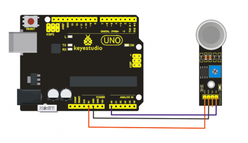

Ks0077(78, 79) keyestudio Super Learning Kit for Arduino
Contents
[hide]- 1 keyestudio Super Learning Kit for Arduino
- 2 Kit Introduction
- 3 Kit Contents
- 4 Project List
- 5 Project Details
- 5.1 Project 1: Hello World
- 5.2 Project 2: LED Blinking
- 5.3 Project 3: PWM
- 5.4 Project 4: Traffic Light
- 5.5 Project 5: LED Chasing Effect
- 5.6 Project 6: Button-controlled LED
- 5.7 Project 7: Active Buzzer
- 5.8 Project 8: Passive Buzzer
- 5.9 Project 9: RGB LED
- 5.10 Project 10: Photo Resistor
- 5.11 Project 11: Flame Sensor
- 5.12 Project 12: LM35 Temperature Sensor
- 5.13 Project 13: Tilt Switch
- 5.14 Project 14: IR Remote Control
- 5.15 Project 15: Analog Value Reading
- 5.16 Project 16: 74HC595
- 5.17 Project 17: 1-digit LED Segment Display
- 5.18 Project 18: 4-digit LED Segment Display
- 5.19 Project 19: 8*8 LED Matrix
- 5.20 Project 20: 1602 LCD
- 5.21 Project 21: 9g Servo Control
- 5.22 Project 22: 5V Stepper Motor
- 5.23 Project 23: PIR Motion Sensor
- 5.24 Project 24: Analog Gas Sensor
- 5.25 Project 25: ADXL345 Three Axis Acceleration Module
- 5.26 Project 26: HC-SR04 Ultrasonic Sensor
- 5.27 Project 27: Joystick Module
- 5.28 Project 28: 5V Relay Module
- 5.29 Project 29: DS3231 Clock Module
- 5.30 Project 30: DHT11 Temperature and Humidity Sensor
- 5.31 Project 31: Soil Humidity Sensor
- 5.32 Project 32: RC522 RFID Module
- 6 Resources
- 7 Buy From
keyestudio Super Learning Kit for Arduino
Kit Introduction
Keyestudio super learning kit is suitable for Arduino enthusiasts. This kit includes 32 projects with detailed tutorials, starting from the basics to more complex projects. Differ from other kits, it adds some functional modules, such as RFID, temperature and humidity module. There is connection diagram and code for each project, making it easy for you to learn.
Kit Contents


{kind=link}
{kind=link}
{kind=link}
{kind=link}
{kind=link}
{kind=link}
{kind=link}
{kind=link}
{kind=link}
{kind=link}
{kind=link}
{kind=link}
{kind=link}
{kind=link}
{kind=link}
{kind=link}
{kind=link}
{kind=link}
{kind=link}
{kind=link}
{kind=link}
{kind=link}
{kind=link}
{kind=link}
{kind=link}
{kind=link}
{kind=link}
{kind=link}
{kind=link}
{kind=link}
{kind=link}
{kind=link}
{kind=link}
{kind=link}
{kind=link}
{kind=link}
{kind=link}
{kind=link}
{kind=link}
{kind=link}
{kind=link}
{kind=link}
{kind=link}
{kind=link}
{kind=link}
Project List
- 1.Hello World
- 2.LED Blinking
- 3.PWM
- 4.Traffic Light
- 5.LED Chase Effect
- 6.Button-controlled LED
- 7.Active Buzzer
- 8.Passive Buzzer
- 9.RGB LED
- 10.Photo Resistor
- 11.Flame Sensor
- 12.LM35 Temperature Sensor
- 13.Tilt Switch
- 14.IR Remote Control
- 15.Analog Value Reading
- 16.74HC595
- 17.1-digit LED Segment Display
- 18.4-digit LED Segment Display
- 19.8*8 LED Matrix
- 20.1602 LCD
- 21.9g Servo Control
- 22.Stepper Motor
- 23.PIR Motion Sensor
- 24.Analog Gas Sensor
- 25.ADXL345 Three Axis Acceleration Module
- 26.HC-SR04 Ultrasonic Sensor
- 27.Joystick Module
- 28.5V Relay Module
- 29.DS3231 Clock Module
- 30.DHT11 Temperature and Humidity Sensor
- 31.Soil Humidity Sensor
- 32.RC522 RFID Module
Project Details
Project 1: Hello World
Introduction:
As for starters, we will begin with something simple. In this project, you only need an Arduino and a USB cable to start the "Hello World!" experiment.This is not only a communication test of your Arduino and PC, but also a primer project for you to have your first try in the Arduino world!
Hardware Required:
1. Arduino board x1
2. USB cable x1
Sample Code:
After installing driver for Arduino, let's open Arduino software and compile the code that enables Arduino to print"Hello World!" under your instruction. Of course, you can compile the code for Arduino to continuously echo "Hello World!" without instruction. A simple If () statement will do the instruction trick. With the onboard LED connected to pin 13, you can instruct the LED to blink first when Arduino gets an instruction and then print the character"Hello World!”.
int val;//define variable val
int ledpin=13;// define digital interface 13
void setup()
{
Serial.begin(9600);// set the baud rate at 9600 to match the software set up. When connected to a specific device, (e.g. bluetooth), the baud rate needs to be the same with it.
pinMode(ledpin,OUTPUT);// initialize digital pin 13 as output. When using I/O ports on an Arduino, this kind of set up is always needed.
}
void loop()
{
val=Serial.read();// read the instruction or character from PC to Arduino, and assign them to Val.
if(val=='R')// determine if the instruction or character received is “R”.
{ // if it’s “R”,
digitalWrite(ledpin,HIGH);// set the LED on digital pin 13 on.
delay(500);
digitalWrite(ledpin,LOW);// set the LED on digital pin 13 off.
delay(500);
Serial.println("Hello World!");// display“Hello World！”string.
}
}
{kind=link}
Click serial port monitor
Input R
LED 13 will blink once；
PC will receive information from Arduino: Hello World
{kind=link}
After choosing the right port, the experiment is very easy for you!
Project 2: LED Blinking
Introduction:
Blinking LED experiment is quite simple. In the "Hello World!" program, we have come across LED. This time, we are going to connect an LED to one of the digital pins rather than using LED13 which is soldered to the board. Apart from an Arduino and a USB cable, you will need extra parts as below:
Hardware Required:
1. Red M5 LED*1
2. 220Ω resistor*1
3. Breadboard*1
4. Breadboard jumper wires* several
We follow below diagram from the experimental schematic link. Here we use digital pin 10. Connect an LED to a 220 ohm resistor to avoid high current damaging the LED.
{kind=link}
{kind=link}
Sample Code:
int ledPin = 10; // define digital pin 10.
void setup()
{
pinMode(ledPin, OUTPUT);// define pin with LED connected as output.
}
void loop()
{
digitalWrite(ledPin, HIGH); // set the LED on.
delay(1000); // wait for a second.
digitalWrite(ledPin, LOW); // set the LED off.
delay(1000); // wait for a second
}
Result:
After downloading this program, in the experiment, you will see the LED connected to pin 10 turning on and off, with an interval approximately one second.
The blinking LED experiment is now completed. Thank you!
Project 3: PWM
Introduction:
PWM, short for Pulse Width Modulation, is a technique used to encode analog signal level into digital ones. A computer cannot output analog voltage but only digital voltage values such as 0V or 5V. So we use a high resolution counter to encode a specific analog signal level by modulating the duty cycle of PMW. The PWM signal is also digitalized because in any given moment, fully on DC power supply is either 5V (ON), or 0V (OFF). The voltage or current is fed to the analog load (the device that uses the power) by repeated pulse sequence being ON or OFF. Being on, the current is fed to the load; being off, it's not. With adequate bandwidth, any analog value can be encoded using PWM. The output voltage value is calculated via the on and off time.
Output voltage = (turn on time/pulse time) * maximum voltage value
{kind=link}
PWM has many applications:
lamp brightness regulating, motor speed regulating, sound making, etc.
The following are the three basic parameters of PMW:
1. The amplitude of pulse width (minimum / maximum)
2. The pulse period (The reciprocal of pulse frequency in 1 second)
3. The voltage level（such as：0V-5V）
There are 6 PMW interfaces on Arduino, namely digital pin 3, 5, 6, 9, 10, and 11. In previous experiments, we have done "button-controlled LED", using digital signal to control digital pin. This time, we will use a potentiometer to control the brightness of LED.
{kind=link}
Hardware Required:
1. Potentiometer*1
2. Red M5 LED*1
3. 220Ω resistor
4. Breadboard*1
5. Breadboard jumper wires*several
The input of potentiometer is analog, so we connect it to analog port, and LED to PWM port. Different PWM signal can regulate the brightness of the LED.
Connection for UNO R3:
{kind=link}
{kind=link}
Sample Code:
In the program compiling process, we will use the analogWrite (PWM interface, analog value) function. In this experiment, we will read the analog value of the potentiometer and assign the value to PWM port, so there will be corresponding change to the brightness of the LED. One final part will display the analog value on the screen. You can consider this as the "analog value reading" project adding the PWM analog value assigning part. Below is a sample program for your reference.
int potpin=0;// initialize analog pin 0
int ledpin=11;//initialize digital pin 11（PWM output）
int val=0;// Temporarily store variables' value from the sensor
void setup()
{
pinMode(ledpin,OUTPUT);// define digital pin 11 as “output”
Serial.begin(9600);// set baud rate at 9600
// attention: for analog ports, they are automatically set up as “input”
}
void loop()
{
val=analogRead(potpin);// read the analog value from the sensor and assign it to val
Serial.println(val);// display value of val
analogWrite(ledpin,val/4);// turn on LED and set up brightness（maximum output of PWM is 255）
delay(10);// wait for 0.01 second
}
{kind=link}
Result:
After uploading the program, when you rotate the potentiometer knob, you can see the value change, and also obvious change of the LED brightness.
Project 4: Traffic Light
Introduction:
In the previous program, we have done the LED blinking experiment with one LED. Now, it’s time to up the stakes and do a bit more complicated experiment-traffic light. Actually, these two experiments are similar. While in this traffic light experiment, we use 3 LEDs with different color rather than one LED.
Hardware Required:
1. Arduino board *1
2. USB cable *1
3. Red M5 LED*1
4. Yellow M5 LED*1
5. Green M5 LED*1
6. 220Ω resistor *3
7. Breadboard*1
8. Breadboard jumper wires* several
{kind=link}
{kind=link}
Sample Code:
Since it is a simulation of traffic light, the blinking time of each LED should be the same with those in traffic light system. In this program, we use Arduino delay () function to control delay time, which is much simpler than C language.
int redled =10; // initialize digital pin 8.
int yellowled =7; // initialize digital pin 7.
int greenled =4; // initialize digital pin 4.
void setup()
{
pinMode(redled, OUTPUT);// set the pin with red LED as “output”
pinMode(yellowled, OUTPUT); // set the pin with yellow LED as “output”
pinMode(greenled, OUTPUT); // set the pin with green LED as “output”
}
void loop()
{
digitalWrite(greenled, HIGH);//// turn on green LED
delay(5000);// wait 5 seconds
digitalWrite(greenled, LOW); // turn off green LED
for(int i=0;i<3;i++)// blinks for 3 times
{
delay(500);// wait 0.5 second
digitalWrite(yellowled, HIGH);// turn on yellow LED
delay(500);// wait 0.5 second
digitalWrite(yellowled, LOW);// turn off yellow LED
}
delay(500);// wait 0.5 second
digitalWrite(redled, HIGH);// turn on red LED
delay(5000);// wait 5 second
digitalWrite(redled, LOW);// turn off red LED
}
Result:
When the uploading process is completed, you can see traffic lights of your own design.
Note: this circuit design is very similar with the one in LED chasing effect.
The green light will be on for 5 seconds, and then off, followed by the yellow light blinking for 3 times, and then the red light is on for 5 seconds, repeatedly forming a cycle.
Experiment is now completed. Thank you.
Project 5: LED Chasing Effect
Introduction:
We often see billboards composed of colorful LEDs. They are constantly changing to form various effects. In this experiment, we compile a program to simulate chase effect.
Hardware Required:
1. Led x6
2. 220Ω resistor x6
3. Colorful breadboard wires
{kind=link}
Connection for 2560 R3:

Sample Code:
int BASE = 2 ; // the I/O pin for the first LED
int NUM = 6; // number of LEDs
void setup()
{
for (int i = BASE; i < BASE + NUM; i ++)
{
pinMode(i, OUTPUT); // set I/O pins as output
}
}
void loop()
{
for (int i = BASE; i < BASE + NUM; i ++)
{
digitalWrite(i, LOW); // set I/O pins as “low”, turn off LEDs one by one.
delay(200); // delay
}
for (int i = BASE; i < BASE + NUM; i ++)
{
digitalWrite(i, HIGH); // set I/O pins as “high”, turn on LEDs one by one
delay(200); // delay
}
}
Result:
You can see the LEDs blink by sequence.
Project 6: Button-controlled LED

Introduction:
I/O port means interface for INPUT and OUTPUT. Up until now, we have only used its OUTPUT function. In this experiment, we will try to use the input function, which is to read the output value of device connecting to it. We use 1 button and 1 LED using both input and output to give you a better understanding of the I/O function. Button switches, familiar to most of us, are a switch value (digital value) component. When it's pressed,the circuit is in closed (conducting) state.
Hardware Required:
1. Button switch*1
2. Red M5 LED*1
3. 220Ω resistor*1
4. 10KΩ resistor*1
5. Breadboard*1
6. Breadboard jumper wires*several
{kind=link}
{kind=link}
Sample Code:
Now, let's begin the compiling. When the button is pressed, the LED will be on. Based on the previous study, the coding may be easy for you. In this program, we add a statement of judgment. Here, we use an if () statement.
Arduino IDE is based on C language, so statements of C language such as while, switch etc. can certainly be used for Arduino program.
When we press the button, pin 7 will output high level. We can program pin 11 to output high level and turn on the LED. When pin 7 outputs low level, pin 11 also outputs low level and the LED remains off.
int ledpin=11;// initialize pin 11
int inpin=7;// initialize pin 7
int val;// define val
void setup()
{
pinMode(ledpin,OUTPUT);// set LED pin as “output”
pinMode(inpin,INPUT);// set button pin as “input”
}
void loop()
{
val=digitalRead(inpin);// read the level value of pin 7 and assign if to val
if(val==LOW)// check if the button is pressed, if yes, turn on the LED
{ digitalWrite(ledpin,LOW);}
else
{ digitalWrite(ledpin,HIGH);}
}
Result:
When the button is pressed, LED is on, otherwise, LED remains off. So the button controlled LED experiment is completed. The simple principle of this experiment is widely used in a variety of circuit and electric appliances. You can easily come across it in your everyday life. One typical example is when you press a certain key of your phone, the backlight will be on.
Project 7: Active Buzzer
{kind=link}
Introduction:
Active buzzer is widely used as a sound making element on computer, printer, alarm, electronic toy, telephone, timer, etc. It has an inner vibration source. Simply connect it with 5V power supply, it can buzz continuously.
Hardware Required:
1. Buzzer*1
2. Key *1
3. Breadboard*1
4. Breadboard jumper wires*several
{kind=link}
Connection for 2560 R3:
When connecting the circuit, pay attention to the positive & the negative poles of the buzzer. In the photo, you can see there are red and black lines. When the circuit is finished, you can begin the programming.
{kind=link}
Sample Code:
Program is simple. You can control the buzzer by outputting high/low level.
int buzzer=8;// initialize digital IO pin that controls the buzzer
void setup()
{
pinMode(buzzer,OUTPUT);// set pin mode as “output”
}
void loop()
{
digitalWrite(buzzer, HIGH); // produce sound
}
Result:
After downloading the program, the buzzer experiment is completed. You can see the buzzer is ringing.
Project 8: Passive Buzzer
{kind=link}
You can use Arduino to make many interactive works.The most commonly used example is acoustic-optic display. All the previous experiment has something to do with LED. However, the circuit in this experiment can produce sound. Normally, the experiment is done with a buzzer or a speaker while buzzer is simpler and easier to use. The buzzer we introduced here is a passive buzzer. It cannot be actuated by itself, but by external pulse frequencies. Different frequencies produce different sounds. You can use Arduino to code the melody of a song, which is quite fun and simple.
Hardware Required:
1.Passive buzzer*1
2. Key *1
3. Breadboard*1
4. Breadboard jumper wires* several
{kind=link}
{kind=link}
Sample Code:
int buzzer=8;// select digital IO pin for the buzzer
void setup()
{
pinMode(buzzer,OUTPUT);// set digital IO pin pattern, OUTPUT to be output
}
void loop()
{ unsigned char i,j;//define variable
while(1)
{ for(i=0;i<80;i++)// output a frequency sound
{ digitalWrite(buzzer,HIGH);// sound
delay(1);//delay1ms
digitalWrite(buzzer,LOW);//not sound
delay(1);//ms delay
}
for(i=0;i<100;i++)// output a frequency sound
{ digitalWrite(buzzer,HIGH);// sound
delay(2);//2ms delay
digitalWrite(buzzer,LOW);//not sound
delay(2);//2ms delay
}
}
}
Result:
After downloading the program, the buzzer experiment is completed.
Project 9: RGB LED
{kind=link}
Tricolor principle to display various colors;
PWM controlling ports to display full color;
Can be driven directly by Arduino PWM interfaces.
Hardware Required:
- Arduino controller × 1
- USB cable × 1
- Full-color LED module × 1
{kind=link}
{kind=link}
Sample Code:
int redpin = 11; //select the pin for the red LED
int bluepin =10; // select the pin for the blue LED
int greenpin =9;// select the pin for the green LED
int val;
void setup() {
pinMode(redpin, OUTPUT);
pinMode(bluepin, OUTPUT);
pinMode(greenpin, OUTPUT);
Serial.begin(9600);
}
void loop()
{
for(val=255; val>0; val--)
{
analogWrite(11, val);
analogWrite(10, 255-val);
analogWrite(9, 128-val);
delay(1);
}
for(val=0; val<255; val++)
{
analogWrite(11, val);
analogWrite(10, 255-val);
analogWrite(9, 128-val);
delay(1);
}
Serial.println(val, DEC);
}
Result:
Directly copy the above code into arduino IDE, and click upload , wait for a few seconds, you can see a full-color LED.
{kind=link}
Project 10: Photo Resistor
{kind=link}
Introduction:
After completing all the previous experiments, you may acquire some basic understanding and knowledge about Arduino application. We have introduced digital input and output, analog input and PWM. Now, let's begin the learning of sensors applications.
Photo resistor (Photovaristor) is a resistor whose resistance varies from the different incident light strength. It's made based on the photoelectric effect of semiconductor. If the incident light is intense, its resistance reduces; if the incident light is weak, the resistance increases. Photovaristor is commonly applied in the measurement of light, light control and photovoltaic conversion (convert the change of light into the change of electricity).
Photo resistor is also widely applied to various light control circuit, such as light control and adjustment, optical switches, etc.We will start with a relatively simple experiment regarding to photovaristor application. Photovaristor is an element that will change its resistance as light strength changes. So need to read the analog values. You can refer to the PWM experiment, replacing the potentiometer with photovaristor. When there is change in light strength, it will cause corresponding change on the LED.
Hardware Required:
- Photo resistor*1
- Red M5 LED*1
- 10KΩresistor*1
- 220Ωresistor*1
- Breadboard*1
- Breadboard jumper wires*several
{kind=link}
{kind=link}
Sample Code:
After the connection, let's begin the program compiling. The program is similar to the one of PWM. For change detail, please refer to the sample program below.
int potpin=0;// initialize analog pin 0, connected with photovaristor
int ledpin=11;// initialize digital pin 11, output regulating the brightness of LED
int val=0;// initialize variable va
void setup()
{
pinMode(ledpin,OUTPUT);// set digital pin 11 as “output”
Serial.begin(9600);// set baud rate at “9600”
}
void loop()
{
val=analogRead(potpin);// read the analog value of the sensor and assign it to val
Serial.println(val);// display the value of val
analogWrite(ledpin,val/4);// turn on the LED and set up brightness（maximum output value 255）
delay(10);// wait for 0.01
}
Result:
After downloading the program, you can change the light strength around the photovaristor and see corresponding brightness change of the LED. Photovaristors has various applications in our everyday life. You can make other interesting interactive projects based on this one.
Project 11: Flame Sensor
Introduction:
Flame sensor (Infrared receiving triode) is specially used on robots to find the fire source. This sensor is of high sensitivity to flame.
{kind=link}
Working Principle:
Flame sensor is based on the principle that infrared ray is highly sensitive to flame. It has an infrared receiving tube specially designed to detect fire, and then convert the flame brightness into fluctuating level signal. The signals are then input into the central processor and be dealt with accordingly.
Sensor Connection:
The shorter lead of the receiving triode is for negative, the other one for positive. Connect negative to 5V pin, positive to resistor; connect the other end of the resistor to GND, connect one end of a jumper wire to a clip which is electrically connected to sensor positive, the other end to analog pin. As shown below:

Hardware Required:
1. Flame sensor*1
2. Buzzer*1
3. 10K resistor*1
4. Breadboard jumper wires: several
Experiment Connection:
1）Connecting buzzer:
Connect the controller board, prototype board, breadboard and USB cable according to the Arduino tutorial. Connect the buzzer to digital pin 8.
2）Connecting flame sensor:
Connect the sensor to analog pin 0.
{kind=link}
{kind=link}
Experiment Principle:
When it's approaching a fire, the voltage value the analog port reads differs. If you use a multimeter, when there is no fire approaching, the voltage it reads is around 0.3V; when there is fire approaching, the voltage it reads is around 1.0V. The nearer the fire is, the higher the voltage is.
So in the beginning of the program, you can initialize voltage value i (no fire value); Then, continuously read the analog voltage value j and obtain difference value k=j-i; compare k with 0.6V (123 in binary) to determine whether there is a fire approaching or not; if yes, the buzzer will buzz.
Sample Code:
int flame=0;// select analog pin 0 for the sensor
int Beep=9;// select digital pin 9 for the buzzer
int val=0;// initialize variable
void setup()
{
pinMode(Beep,OUTPUT);// set LED pin as “output”
pinMode(flame,INPUT);// set buzzer pin as “input”
Serial.begin(9600);// set baud rate at “9600”
}
void loop()
{
val=analogRead(flame);// read the analog value of the sensor
Serial.println(val);// output and display the analog value
if(val>=600)// when the analog value is larger than 600, the buzzer will buzz
{
digitalWrite(Beep,HIGH);
}else
{
digitalWrite(Beep,LOW);
}
delay(500);
}
Result:
This program can simulate an alarm when there is a fire. Everything is normal when there is no fire; when there is fire, the alarm will be set off immediately.
Project 12: LM35 Temperature Sensor
Introduction:
LM35 is a common and easy-to-use temperature sensor. It does not require other hardware. You just need an analog port to make it work. The difficulty lies in compiling the code to convert the analog value it reads to celsius temperature.
{kind=link}
Hardware Required:
1. LM35*1
2. Breadboard*1
3. Breadboard jumper wires*several
{kind=link}
{kind=link}
Sample Code:
int potPin = 0; // initialize analog pin 0 for LM35 temperature sensor
void setup()
{
Serial.begin(9600);// set baud rate at”9600”
}
void loop()
{
int val;// define variable
int dat;// define variable
val=analogRead(0);// read the analog value of the sensor and assign it to val
dat=(125*val)>>8;// temperature calculation formula
Serial.print("Tep:");// output and display characters beginning with Tep
Serial.print(dat);// output and display value of dat
Serial.println("C");// display “C” characters
delay(500);// wait for 0.5 second
}
Result:
After downloading the program, you can open the monitoring window to see the current temperature.
{kind=link}
Project 13: Tilt Switch
{kind=link}
Tilt switch controlling the LED ON and OFF.
Hardware Required:
1. Ball switch*1
2. Led *1
3. 220Ω resistor*1
4. 10KΩ resistor*1
5. Breadboard jumper wires:several
{kind=link}
{kind=link}
Connect the controller board, shield, breadboard and USB cable according to Arduino tutorial. Connect the LED to digital pin 8, ball switch to analog pin 5.
Experiment Principle:
When one end of the switch is below horizontal position, the switch is on. The voltage of the analog port is about 5V (1023 in binary). The LED will be on. When the other end of the switch is below horizontal position, the switch is off. The voltage of the analog port is about 0V (0 in binary). The LED will be off. In the program, we determine whether the switch is on or off according to the voltage value of the analog port, whether it's above 2.5V (512 in binary) or not.
Sample Code:
void setup()
{
pinMode(8,OUTPUT);// set digital pin 8 as “output”
}
void loop()
{
int i;// define variable i
while(1)
{
i=analogRead(5);// read the voltage value of analog pin 5
if(i>512)// if larger that 512（2.5V）
{
digitalWrite(8,LOW);// turn on LED
}
else// otherwise
{
digitalWrite(8,HIGH);// turn off LED
}
}
}
Result:
Hold the breadboard with your hand. Tilt it to a certain extent, the LED will be on. If there is no tilt, the LED will be off.
The principle of this experiment can be applied to relay control.
Experiment is completed.
Thank you!
Project 14: IR Remote Control
{kind=link}
Introduction:
What is an infrared receiver?
The signal from the infrared remote controller is a series of binary pulse code. To avoid interference from other infrared signals during the wireless transmission, the signal is pre-modulate at a specific carrier frequency and then send out by an infrared emission diode. The infrared receiving device needs to filter out other wave and receive signal at that specific frequency and modulate it back to binary pulse code, known as demodulation.
Working Principle:
The built-in receiver converts the light signal it received from the sender into feeble electrical signal. The signal will be amplified by the IC amplifier. After automatic gain control, band-pass filtering, demodulation, wave shaping, it returns to the original code. The code is then input to the code identification circuit by the receiver's signal output pin.
The pin and the connection of the infrared receiving head.
Pin and wiring of infrared receiver:
{kind=link}
{kind=link}
Infrared receiver has 3 pins.
When you use it, connect VOUT to analog pin, GND to GND, VCC to +5V.
Hardware Required:
- Infrared remote controller x1
- Infrared receiver x1
- LED x6
- 220Ω resistor x6
- Multi-color breadboard wires x several
Connection Diagram:
First, connect the controller board; then connect the infrared receiver as the above mentioned, connect VOUT to digital pin 11, connect the LEDs with resistors and connect the resistors to pin2,3,4,5,6,7.
{kind=link}
{kind=link}
Experimental Principle:
If you want to decode the code from a remote controller, you must first know how it's coded. The coding method we use here is NEC protocol. Below is a brief introduction.
- NEC protocol:
Features：
(1) 8 bit address and 8 bit command length
(2) address and command are transmitted twice for reliability
(3) pulse distance modulation
(4) carrier frequency of 38 KHZ
(5) bit time of 1.125ms or 2.25ms
Protocol is as below:
- Definition of logical 0 and 1 is as below
{kind=link}
- Pulse transmitted when button is pressed and immediately released.

The picture above shows a typical pulse train of the NEC protocol. With this protocol the LSB is transmitted first. In this case Address $59 and Command $16 is transmitted. A message is started by a 9ms AGC burst, which was used to set the gain of the earlier IR receivers. This AGC burst is then followed by a 4.5ms space, which is then followed by the address and command. Address and Command are transmitted twice. The second time all bits are inverted and can be used for verification of the received message. The total transmission time is constant because every bit is repeated with its inverted length. If you are not interested in this reliability, you can ignore the inverted values, or you can expend the Address and Command to 16 bits each!
- Pulse transmitted when button is pressed and released after a period of time
{kind=link}
A command is transmitted only once, even when the key on the remote control remains pressed. Every 110ms a repeat code is transmitted for as long as the key remains down. This repeat code is simply a 9ms AGC pulse followed by a 2.25ms space and a 560µs burst.
- Repeat pulse
{kind=link}
Note: when the pulse enters the integrated receiver, there will be decoding, signal amplifying and wave shaping process. So you need to make sure the level of the output is just the opposite from that of the signal sending end. That is when there is no infrared signal, the output end is in high level; when there is infrared signal, the output end is in low level. You can see the pulse of the receiving end in the oscilloscope. Try to better understand the program base on what you see.
Sample Code:
#include <IRremote.h>
int RECV_PIN = 11;
int LED1 = 2;
int LED2 = 3;
int LED3 = 4;
int LED4 = 5;
int LED5 = 6;
int LED6 = 7;
long on1 = 0x00FF6897;
long off1 = 0x00FF9867;
long on2 = 0x00FFB04F;
long off2 = 0x00FF30CF;
long on3 = 0x00FF18E7;
long off3 = 0x00FF7A85;
long on4 = 0x00FF10EF;
long off4 = 0x00FF38C7;
long on5 = 0x00FF5AA5;
long off5 = 0x00FF42BD;
long on6 = 0x00FF4AB5;
long off6 = 0x00FF52AD;
IRrecv irrecv(RECV_PIN);
decode_results results;
// Dumps out the decode_results structure.
// Call this after IRrecv::decode()
// void * to work around compiler issue
//void dump(void *v) {
// decode_results *results = (decode_results *)v
void dump(decode_results *results) {
int count = results->rawlen;
if (results->decode_type == UNKNOWN)
{
Serial.println("Could not decode message");
}
else
{
if (results->decode_type == NEC)
{
Serial.print("Decoded NEC: ");
}
else if (results->decode_type == SONY)
{
Serial.print("Decoded SONY: ");
}
else if (results->decode_type == RC5)
{
Serial.print("Decoded RC5: ");
}
else if (results->decode_type == RC6)
{
Serial.print("Decoded RC6: ");
}
Serial.print(results->value, HEX);
Serial.print(" (");
Serial.print(results->bits, DEC);
Serial.println(" bits)");
}
Serial.print("Raw (");
Serial.print(count, DEC);
Serial.print("): ");
for (int i = 0; i < count; i++)
{
if ((i % 2) == 1) {
Serial.print(results->rawbuf[i]*USECPERTICK, DEC);
}
else
{
Serial.print(-(int)results->rawbuf[i]*USECPERTICK, DEC);
}
Serial.print(" ");
}
Serial.println("");
}
void setup()
{
pinMode(RECV_PIN, INPUT);
pinMode(LED1, OUTPUT);
pinMode(LED2, OUTPUT);
pinMode(LED3, OUTPUT);
pinMode(LED4, OUTPUT);
pinMode(LED5, OUTPUT);
pinMode(LED6, OUTPUT);
pinMode(13, OUTPUT);
Serial.begin(9600);
irrecv.enableIRIn(); // Start the receiver
}
int on = 0;
unsigned long last = millis();
void loop()
{
if (irrecv.decode(&results))
{
// If it's been at least 1/4 second since the last
// IR received, toggle the relay
if (millis() - last > 250)
{
on = !on;
// digitalWrite(8, on ? HIGH : LOW);
digitalWrite(13, on ? HIGH : LOW);
dump(&results);
}
if (results.value == on1 )
digitalWrite(LED1, HIGH);
if (results.value == off1 )
digitalWrite(LED1, LOW);
if (results.value == on2 )
digitalWrite(LED2, HIGH);
if (results.value == off2 )
digitalWrite(LED2, LOW);
if (results.value == on3 )
digitalWrite(LED3, HIGH);
if (results.value == off3 )
digitalWrite(LED3, LOW);
if (results.value == on4 )
digitalWrite(LED4, HIGH);
if (results.value == off4 )
digitalWrite(LED4, LOW);
if (results.value == on5 )
digitalWrite(LED5, HIGH);
if (results.value == off5 )
digitalWrite(LED5, LOW);
if (results.value == on6 )
digitalWrite(LED6, HIGH);
if (results.value == off6 )
digitalWrite(LED6, LOW);
last = millis();
irrecv.resume(); // Receive the next value
}
}
Program Function
Decode the coded pulse signal emitted by the remote controller, then execute corresponding action according to the results of the decoding. In this way, you are able to control your device with remote control.
{kind=link}
Note： add IRremote folder into installation directory \Arduino\compiler libraries, or it will fail to compile.
For example：C:\Program Files\Arduino\libraries
Project 15: Analog Value Reading
Introduction:
In this experiment, we will begin the learning of analog I/O interfaces. On an Arduino, there are 6 analog interfaces numbered from 0 to 5. These 6 interfaces can also be used as digital ones numbered as 14-19. After a brief introduction, let's begin our project. Potentiometer used here is a typical output component of analog value that is familiar to us.
Hardware Required:
1.Potentiometer *1
2.Breadboard*1
3.Breadboard jumper wires * several
Connection:
In this experiment, we will convert the resistance value of the potentiometer to analog ones and display it on the screen. This is an application you need to master well for our future experiments.
Connection circuit as below:
{kind=link}
{kind=link}
The analog interface we use here is interface A0.
Sample Code:
The program compiling is simple. An analogRead () Statement can read the value of the interface. The A/D acquisition of Arduino 328 is in 10 bits, so the value it reads is among 0 to 1023. One difficulty in this project is to display the value on the screen, which is actually easy to learn. First, we need to set the baud rate in voidsetup (). Displaying the value is a communication between Arduino and PC, so the baud rate of the Arduino should match the the one in the PC's software set up. Otherwise, the display will be messy codes or no display at all. In the lower right corner of the Arduino software monitor window, there is a button for baud rate set up. The set up here needs to match the one in the program. The statement in the program is Serial.begin(); enclosed is the baud rate value, followed by statement for displaying. You can either use Serial.print() or Serial.println() statement.
int potpin=0;// initialize analog pin 0
int ledpin=13;// initialize digital pin 13
int val=0;// define val, assign initial value 0
void setup()
{
pinMode(ledpin,OUTPUT);// set digital pin as “output”
Serial.begin(9600);// set baud rate at 9600
}
void loop()
{
digitalWrite(ledpin,HIGH);// turn on the LED on pin 13
delay(50);// wait for 0.05 second
digitalWrite(ledpin,LOW);// turn off the LED on pin 13
delay(50);// wait for 0.05 second
val=analogRead(potpin);// read the analog value of analog pin 0, and assign it to val
Serial.println(val);// display val’s value
}
Result:
The sample program uses the built-in LED connected to pin 13. Each time the device reads a value, the LED blinks.
Below is the analog value it reads.
{kind=link}
When you rotate the potentiometer knob, you can see the displayed value change. The reading of analog value is a very common function for most sensors output analog value. After calculation, you can get the corresponding value you need.
The experiment is now completed. Thank you.
Project 16: 74HC595
{kind=link}
Introduction:
To put it simply, 74HC595 is a combination of 8-digit shifting register, memorizer and equipped with tri-state output. Here, we use it to control 8 LEDs. You may wonder why use a 74HC595 to control LED? Well, think about how many I/O it takes for an Arduino to control 8 LEDs? Yes, 8. For an Arduino 168, it has only 20 I/O including analog ports. To save port resources, we use 74HC595 to reduce the number of ports it needs. Using 74HC595 enables us to use 3 digital I/O port to control 8 LEDs!
Hardware Required:
1.74HC595 chip*1
2.Red M5 LED*4
3.Green M5 LED*4
4.220Ω resistor*8
5.Breadboard*1
6.Breadboard jumper wires*several
Note: for pin 13 OE port of 74HC595, it should be connected to GND
{kind=link}
{kind=link}
The circuit may seem complicated, but soon you will find it easy!
Sample Code:
int data = 2;// set pin 14 of 74HC595as data input pin SI
int clock = 5;// set pin 11 of 74hc595 as clock pin SCK
int latch = 4;// set pin 12 of 74hc595 as output latch RCK
int ledState = 0;
const int ON = HIGH;
const int OFF = LOW;
void setup()
{
pinMode(data, OUTPUT);
pinMode(clock, OUTPUT);
pinMode(latch, OUTPUT);
}
void loop()
{
for(int i = 0; i < 256; i++)
{
updateLEDs(i);
delay(500);
}
}
void updateLEDs(int value)
{
digitalWrite(latch, LOW);//
shiftOut(data, clock, MSBFIRST, ~value);// serial data “output”, high level first
digitalWrite(latch, HIGH);// latch
}
Result:
After downloading the program, you can see 8 LEDs display 8-bit binary number.
Project 17: 1-digit LED Segment Display

Introduction:
LED segment displays are common for displaying numerical information. It's widely applied on displays of electromagnetic oven, full automatic washing machine, water temperature display, electronic clock, etc. It is necessary for us to learn how it works.
LED segment display is a semiconductor light-emitting device. Its basic unit is a light-emitting diode (LED). LED segment display can be divided into 7-segment display and 8-segment display according to the number of segments. 8-segment display has one more LED unit ( for decimal point display) than 7-segment one. In this experiment, we use a 8-segment display. According to the wiring method of LED units, LED segment displays can be divided into common anode display and common cathode display. Common anode display refers to the one that combine all the anodes of LED units into one common anode (COM).
For the common anode display, connect the common anode (COM) to +5V. When the cathode level of a certain segment is low, the segment is on; when the cathode level of a certain segment is high, the segment is off. For the common cathode display, connect the common cathode (COM) to GND. When the anode level of a certain segment is high, the segment is on; when the anode level of a certain segment is low, the segment is off.

Each segment of the display consists of an LED. So when you use it, you also need to use a current-limiting resistor. Otherwise, LED will be burnt out. In this experiment, we use a common cathode display. As we mentioned above, for common cathode display, connect the common cathode (COM) to GND. When the anode level of a certain segment is high, the segment is on; when the anode level of a certain segment is low, the segment is off.
Hardware Required:
1.1-digit LED display*1
2.220Ω resistor*8
3.Breadboard*1
4.Breadboard jumper wires*several
Connection:
Refer to following connection diagram
{kind=link}
{kind=link}
Sample Code:
There are seven segments for numerical display, one for decimal point display. Corresponding segments will be turned on when displaying certain numbers. For example, when displaying number 1, b and c segments will be turned on. We compile a subprogram for each number, and compile the main program to display one number every 2 seconds, cycling display number 0 ~ 9. The displaying time for each number is subject to the delay time, the longer the delay time, the longer the displaying time.
// set the IO pin for each segment
int a=7;// set digital pin 7 for segment a
int b=6;// set digital pin 6 for segment b
int c=5;// set digital pin 5 for segment c
int d=10;// set digital pin 10 for segment d
int e=11;// set digital pin 11 for segment e
int f=8;// set digital pin 8 for segment f
int g=9;// set digital pin 9 for segment g
int dp=4;// set digital pin 4 for segment dp
void digital_0(void) // display number 5
{
unsigned char j;
digitalWrite(a,HIGH);
digitalWrite(b,HIGH);
digitalWrite(c,HIGH);
digitalWrite(d,HIGH);
digitalWrite(e,HIGH);
digitalWrite(f,HIGH);
digitalWrite(g,LOW);
digitalWrite(dp,LOW);
}
void digital_1(void) // display number 1
{
unsigned char j;
digitalWrite(c,HIGH);// set level as “high” for pin 5, turn on segment c
digitalWrite(b,HIGH);// turn on segment b
for(j=7;j<=11;j++)// turn off other segments
digitalWrite(j,LOW);
digitalWrite(dp,LOW);// turn off segment dp
}
void digital_2(void) // display number 2
{
unsigned char j;
digitalWrite(b,HIGH);
digitalWrite(a,HIGH);
for(j=9;j<=11;j++)
digitalWrite(j,HIGH);
digitalWrite(dp,LOW);
digitalWrite(c,LOW);
digitalWrite(f,LOW);
}
void digital_3(void) // display number 3
{digitalWrite(g,HIGH);
digitalWrite(a,HIGH);
digitalWrite(b,HIGH);
digitalWrite(c,HIGH);
digitalWrite(d,HIGH);
digitalWrite(dp,LOW);
digitalWrite(f,LOW);
digitalWrite(e,LOW);
}
void digital_4(void) // display number 4
{digitalWrite(c,HIGH);
digitalWrite(b,HIGH);
digitalWrite(f,HIGH);
digitalWrite(g,HIGH);
digitalWrite(dp,LOW);
digitalWrite(a,LOW);
digitalWrite(e,LOW);
digitalWrite(d,LOW);
}
void digital_5(void) // display number 5
{
unsigned char j;
digitalWrite(a,HIGH);
digitalWrite(b, LOW);
digitalWrite(c,HIGH);
digitalWrite(d,HIGH);
digitalWrite(e, LOW);
digitalWrite(f,HIGH);
digitalWrite(g,HIGH);
digitalWrite(dp,LOW);
}
void digital_6(void) // display number 6
{
unsigned char j;
for(j=7;j<=11;j++)
digitalWrite(j,HIGH);
digitalWrite(c,HIGH);
digitalWrite(dp,LOW);
digitalWrite(b,LOW);
}
void digital_7(void) // display number 7
{
unsigned char j;
for(j=5;j<=7;j++)
digitalWrite(j,HIGH);
digitalWrite(dp,LOW);
for(j=8;j<=11;j++)
digitalWrite(j,LOW);
}
void digital_8(void) // display number 8
{
unsigned char j;
for(j=5;j<=11;j++)
digitalWrite(j,HIGH);
digitalWrite(dp,LOW);
}
void digital_9(void) // display number 5
{
unsigned char j;
digitalWrite(a,HIGH);
digitalWrite(b,HIGH);
digitalWrite(c,HIGH);
digitalWrite(d,HIGH);
digitalWrite(e, LOW);
digitalWrite(f,HIGH);
digitalWrite(g,HIGH);
digitalWrite(dp,LOW);
}
void setup()
{
int i;// set variable
for(i=4;i<=11;i++)
pinMode(i,OUTPUT);// set pin 4-11as “output”
}
void loop()
{
while(1)
{
digital_0();// display number 0
delay(1000);// wait for 1s
digital_1();// display number 1
delay(1000);// wait for 1s
digital_2();// display number 2
delay(1000); // wait for 1s
digital_3();// display number 3
delay(1000); // wait for 1s
digital_4();// display number 4
delay(1000); // wait for 1s
digital_5();// display number 5
delay(1000); // wait for 1s
digital_6();// display number 6
delay(1000); // wait for 1s
digital_7();// display number 7
delay(1000); // wait for 1s
digital_8();// display number 8
delay(1000); // wait for 1s
digital_9();// display number 9
delay(1000); // wait for 1s
}
}
Result:
LED segment display will display the number from 0 to 9.
Project 18: 4-digit LED Segment Display
{kind=link}
Introduction:
In this experiment, we use an Arduino to drive a common anode, 4-digit, 7-segment LED display. For LED display, current-limiting resistors are indispensable. There are two wiring method for Current-limiting resistor. One is to connect one resistor for each anode, 4 in total for d1-d4 anode. An advantage for this method is that it requires fewer resistors, only 4. But it cannot maintain consistent brightness, 1 the brightest, 8, the least bright. Another method is to connect one resistor to each pin. It guarantees consistent brightness, but requires more resistors. In this experiment, we use 8 220Ω resistors (we use 220Ω resistors because no 100Ω resistor available. If you use 100Ω, the displaying is more brighter).
Connection:
For 4-digit displays, there are 12 pins in total. When you place the decimal point downward (see below photo position), the pin on the lower left part is refer to as 1, the upper left part 12.
.png){kind=link}
Manual for LED segment display:
{kind=link}
{kind=link}
{kind=link}
Sample Code:
// display 1234
// select pin for cathode
int a = 1;
int b = 2;
int c = 3;
int d = 4;
int e = 5;
int f = 6;
int g = 7;
int dp = 8;
// select pin for anode
int d4 = 9;
int d3 = 10;
int d2 = 11;
int d1 = 12;
// set variable
long n = 1230;
int x = 100;
int del = 55; // fine adjustment for clock
void setup()
{
pinMode(d1, OUTPUT);
pinMode(d2, OUTPUT);
pinMode(d3, OUTPUT);
pinMode(d4, OUTPUT);
pinMode(a, OUTPUT);
pinMode(b, OUTPUT);
pinMode(c, OUTPUT);
pinMode(d, OUTPUT);
pinMode(e, OUTPUT);
pinMode(f, OUTPUT);
pinMode(g, OUTPUT);
pinMode(dp, OUTPUT);
}
/////////////////////////////////////////////////////////////
void loop()
{
Display(1, 1);
Display(2, 2);
Display(3, 3);
Display(4, 4);
}
///////////////////////////////////////////////////////////////
void WeiXuan(unsigned char n)//
{
switch(n)
{
case 1:
digitalWrite(d1,LOW);
digitalWrite(d2, HIGH);
digitalWrite(d3, HIGH);
digitalWrite(d4, HIGH);
break;
case 2:
digitalWrite(d1, HIGH);
digitalWrite(d2, LOW);
digitalWrite(d3, HIGH);
digitalWrite(d4, HIGH);
break;
case 3:
digitalWrite(d1,HIGH);
digitalWrite(d2, HIGH);
digitalWrite(d3, LOW);
digitalWrite(d4, HIGH);
break;
case 4:
digitalWrite(d1, HIGH);
digitalWrite(d2, HIGH);
digitalWrite(d3, HIGH);
digitalWrite(d4, LOW);
break;
default :
digitalWrite(d1, HIGH);
digitalWrite(d2, HIGH);
digitalWrite(d3, HIGH);
digitalWrite(d4, HIGH);
break;
}
}
void Num_0()
{
digitalWrite(a, HIGH);
digitalWrite(b, HIGH);
digitalWrite(c, HIGH);
digitalWrite(d, HIGH);
digitalWrite(e, HIGH);
digitalWrite(f, HIGH);
digitalWrite(g, LOW);
digitalWrite(dp,LOW);
}
void Num_1()
{
digitalWrite(a, LOW);
digitalWrite(b, HIGH);
digitalWrite(c, HIGH);
digitalWrite(d, LOW);
digitalWrite(e, LOW);
digitalWrite(f, LOW);
digitalWrite(g, LOW);
digitalWrite(dp,LOW);
}
void Num_2()
{
digitalWrite(a, HIGH);
digitalWrite(b, HIGH);
digitalWrite(c, LOW);
digitalWrite(d, HIGH);
digitalWrite(e, HIGH);
digitalWrite(f, LOW);
digitalWrite(g, HIGH);
digitalWrite(dp,LOW);
}
void Num_3()
{
digitalWrite(a, HIGH);
digitalWrite(b, HIGH);
digitalWrite(c, HIGH);
digitalWrite(d, HIGH);
digitalWrite(e, LOW);
digitalWrite(f, LOW);
digitalWrite(g, HIGH);
digitalWrite(dp,LOW);
}
void Num_4()
{
digitalWrite(a, LOW);
digitalWrite(b, HIGH);
digitalWrite(c, HIGH);
digitalWrite(d, LOW);
digitalWrite(e, LOW);
digitalWrite(f, HIGH);
digitalWrite(g, HIGH);
digitalWrite(dp,LOW);
}
void Num_5()
{
digitalWrite(a, HIGH);
digitalWrite(b, LOW);
digitalWrite(c, HIGH);
digitalWrite(d, HIGH);
digitalWrite(e, LOW);
digitalWrite(f, HIGH);
digitalWrite(g, HIGH);
digitalWrite(dp,LOW);
}
void Num_6()
{
digitalWrite(a, HIGH);
digitalWrite(b, LOW);
digitalWrite(c, HIGH);
digitalWrite(d, HIGH);
digitalWrite(e, HIGH);
digitalWrite(f, HIGH);
digitalWrite(g, HIGH);
digitalWrite(dp,LOW);
}
void Num_7()
{
digitalWrite(a, HIGH);
digitalWrite(b, HIGH);
digitalWrite(c, HIGH);
digitalWrite(d, LOW);
digitalWrite(e, LOW);
digitalWrite(f, LOW);
digitalWrite(g, LOW);
digitalWrite(dp,LOW);
}
void Num_8()
{
digitalWrite(a, HIGH);
digitalWrite(b, HIGH);
digitalWrite(c, HIGH);
digitalWrite(d, HIGH);
digitalWrite(e, HIGH);
digitalWrite(f, HIGH);
digitalWrite(g, HIGH);
digitalWrite(dp,LOW);
}
void Num_9()
{
digitalWrite(a, HIGH);
digitalWrite(b, HIGH);
digitalWrite(c, HIGH);
digitalWrite(d, HIGH);
digitalWrite(e, LOW);
digitalWrite(f, HIGH);
digitalWrite(g, HIGH);
digitalWrite(dp,LOW);
}
void Clear() // clear the screen
{
digitalWrite(a, LOW);
digitalWrite(b, LOW);
digitalWrite(c, LOW);
digitalWrite(d, LOW);
digitalWrite(e, LOW);
digitalWrite(f, LOW);
digitalWrite(g, LOW);
digitalWrite(dp,LOW);
}
void pickNumber(unsigned char n)// select number
{
switch(n)
{
case 0:Num_0();
break;
case 1:Num_1();
break;
case 2:Num_2();
break;
case 3:Num_3();
break;
case 4:Num_4();
break;
case 5:Num_5();
break;
case 6:Num_6();
break;
case 7:Num_7();
break;
case 8:Num_8();
break;
case 9:Num_9();
break;
default:Clear();
break;
}
}
void Display(unsigned char x, unsigned char Number)// take x as coordinate and display number
{
WeiXuan(x);
pickNumber(Number);
delay(1);
Clear() ; // clear the screen
}
Result:
Download the above code to the controller board and see the result.
It will display the number 1234.
Note: if it’s not displaying correctly, check the wiring.
Thank you.
Project 19: 8*8 LED Matrix
{kind=link}
Introduction:
With low-voltage scanning, LED dot-matrix display have some advantages such as power saving, long service life, low cost, high brightness, wide angle of view, long visual range, waterproof, and numerous specifications. LED dot-matrix display can meet the needs of different applications, thus have a broad development prospect. This time, we will conduct an LED dot-matrix experiment to experience its charm firsthand.
Hardware Required:
- 1 * Uno board
- 1 * 8*8 dot-matrix
- 8 * Resistor (220Ω)
- 1 * Breadboard
- 1 * USB cable
- Jumper wires
Connection:
The external view of a dot-matrix is shown as follows:
{kind=link}
The display principle of the 8*8 dot-matrix:
The 8*8 dot-matrix is made up of sixty-four LEDs, and each LED is placed at the cross point of a row and a column. When the electrical level of a certain row is 1 and the electrical level of a certain column is 0, the corresponding LED will be on. If you want to light the LED on the first dot, you should set pin 9 to high level and pin 13 to low level. If you want to light LEDs on the first row, you should set pin 9 to high level and pins 13, 3, 4, 10, 6, 11, 15 and 16 to low level. If you want to light the LEDs on the first column, set pin 13 to low level and pins 9, 14, 8, 12, 1, 7, 2 and 5 to high level.
The internal view of a dot-matrix is shown as follows:
{kind=link}
The principle of 74HC595 has been previously illustrated. One chip is used to control the rows of the dot-matrix while the other chip is used to control the columns.
Connect circuit as shown in the following diagram:
{kind=link}
{kind=link}
Sample Code for Displaying “0”:
// set an array to store character of “0”
unsigned char Text[]={0x00,0x1c,0x22,0x22,0x22,0x22,0x22,0x1c};
void Draw_point(unsigned char x,unsigned char y)// point drawing function
{ clear_();
digitalWrite(x+2, HIGH);
digitalWrite(y+10, LOW);
delay(1);
}
void show_num(void)// display function, call point drawing function
{
unsigned char i,j,data;
for(i=0;i<8;i++)
{
data=Text[i];
for(j=0;j<8;j++)
{
if(data & 0x01)Draw_point(j,i);
data>>=1;
}
}
}
void setup(){
int i = 0 ;
for(i=2;i<18;i++)
{
pinMode(i, OUTPUT);
}
clear_();
}
void loop()
{ show_num();
}
void clear_(void)// clear screen
{for(int i=2;i<10;i++)
digitalWrite(i, LOW);
for(int i=0;i<8;i++)
digitalWrite(i+10, HIGH);
}
Result:
Burn the program into Uno board, the dot-matrix will display 0.
Project 20: 1602 LCD
{kind=link}
Introduction:
In this experiment, we use an Arduino to drive the 1602 LCD.
1602 LCD has wide applications. In the beginning,1602 LCD uses a HD44780 controller. Now, almost all 1602 LCD module uses a compatible IC, but their features are basically the same.
1602LCD Parameters:
- Display Capacity: 16 × 2 characters.
- Chip Operating Voltage: 4.5 ~ 5.5V.
- Working Current: 2.0mA (5.0V).
- Optimum working voltage of the module is 5.0V.
- Character Size: 2.95 * 4.35 (W * H) mm.
Pin Description of 1602 LCD：
| No. | Mark | Pin Description | No. | Mark | Pin Description |
|---|---|---|---|---|---|
| 1 | VSS | Power GND | 9 | D2 | Date I/O |
| 2 | VDD | Power Positive | 10 | D3 | Date I/O |
| 3 | VL | LCD Voltage Bias Signal | 11 | D4 | Date I/O |
| 4 | RS | Select data/command(V/L) | 12 | D5 | Date I/O |
| 5 | R/W | Select read/write(H/L) | 13 | D6 | Date I/O |
| 6 | E | Enable Signal | 14 | D7 | Date I/O |
| 7 | D0 | Date I/O | 15 | BLA | Back Light Power Positive |
| 8 | D1 | Date I/O | 16 | BLK | Back Light Power Negative |
Interface Description:
1. two power sources, one for module power, another one for backlight, generally use 5V. In this project, we use 3.3V for backlight.
2. VL is the pin for adjusting contrast ratio; it usually connects a potentiometer(no more than 5KΩ) in series for its adjustment. In this experiment, we use a 1KΩ resistor. For the connection, it has 2 methods, namely high potential and low potential. Here, we use low potential method; connect the resistor and then the GND.
3. RS is a very common pin in LCD. It's a selecting pin for command/data. When the pin is in high level, it's in data mode; when it's in low level, it's in command mode.
4. RW pin is also very common in LCD. It's a selecting pin for read/write. When the pin is in high level, it's in read operation; when it's in low level, it's in write operation.
5. E pin is also very common in LCD. Usually, when the signal in the bus is stabilized, it sends out a positive pulse requiring read operation. When this pin is in high level, the bus is not allowed to have any change.
6. D0-D7 is 8-bit bidirectional parallel bus, used for command and data transmission.
7. BLA is anode for back light; BLK, cathode for back light.
4 Basic Operations of 1602LCD:
| Read status | input | RS=L, R/W=H, E=H | output | D0-D7=status word |
| Write command | input | RS=L, R/W=H, D0-D7=command code, E=high pulse | output | none |
| Read data | input | RS=H, R/W=H, E=H | output | D0-D7=data |
| Write data | input | RS=H, R/W=L, D0-D7=data, E=high pulse | output | none |
Hardware Required:
- 1 * Controller Board
- 1 * 1602 LCD
- 1 * Potentiometer
- 1 * Breadboard
- 1 * USB Cable
- Jumper Wires
Connection & Sample Program:
1602 can directly communicate with Arduino. According to the product manual, it has two connection methods, namely 8-bit connection and 4-bit connection.
{kind=link}
Connection for UNO R3:

{kind=link}
Sample Code A:
int DI = 12;
int RW = 11;
int DB[] = {3, 4, 5, 6, 7, 8, 9, 10};// use array to select pin for bus
int Enable = 2;
void LcdCommandWrite(int value) {
// define all pins
int i = 0;
for (i=DB[0]; i <= DI; i++) // assign value for bus
{
digitalWrite(i,value & 01);// for 1602 LCD, it uses D7-D0( not D0-D7) for signal identification; here, it’s used for signal inversion.
value >>= 1;
}
digitalWrite(Enable,LOW);
delayMicroseconds(1);
digitalWrite(Enable,HIGH);
delayMicroseconds(1); // wait for 1ms
digitalWrite(Enable,LOW);
delayMicroseconds(1); // wait for 1ms
}
void LcdDataWrite(int value) {
// initialize all pins
int i = 0;
digitalWrite(DI, HIGH);
digitalWrite(RW, LOW);
for (i=DB[0]; i <= DB[7]; i++) {
digitalWrite(i,value & 01);
value >>= 1;
}
digitalWrite(Enable,LOW);
delayMicroseconds(1);
digitalWrite(Enable,HIGH);
delayMicroseconds(1);
digitalWrite(Enable,LOW);
delayMicroseconds(1); // wait for 1ms
}
void setup (void) {
int i = 0;
for (i=Enable; i <= DI; i++) {
pinMode(i,OUTPUT);
}
delay(100);
// initialize LCD after a brief pause
// for LCD control
LcdCommandWrite(0x38); // select as 8-bit interface, 2-line display, 5x7 character size
delay(64);
LcdCommandWrite(0x38); // select as 8-bit interface, 2-line display, 5x7 character size
delay(50);
LcdCommandWrite(0x38); // select as 8-bit interface, 2-line display, 5x7 character size
delay(20);
LcdCommandWrite(0x06); // set input mode
// auto-increment, no display of shifting
delay(20);
LcdCommandWrite(0x0E); // display setup
// turn on the monitor, cursor on, no flickering
delay(20);
LcdCommandWrite(0x01); // clear the scree, cursor position returns to 0
delay(100);
LcdCommandWrite(0x80); // display setup
// turn on the monitor, cursor on, no flickering
delay(20);
}
void loop (void) {
LcdCommandWrite(0x01); // clear the scree, cursor position returns to 0
delay(10);
LcdCommandWrite(0x80+3);
delay(10);
// write in welcome message
LcdDataWrite('W');
LcdDataWrite('e');
LcdDataWrite('l');
LcdDataWrite('c');
LcdDataWrite('o');
LcdDataWrite('m');
LcdDataWrite('e');
LcdDataWrite(' ');
LcdDataWrite('t');
LcdDataWrite('o');
delay(10);
LcdCommandWrite(0xc0+1); // set cursor position at second line, second position
delay(10);
LcdDataWrite('g');
LcdDataWrite('e');
LcdDataWrite('e');
LcdDataWrite('k');
LcdDataWrite('-');
LcdDataWrite('w');
LcdDataWrite('o');
LcdDataWrite('r');
LcdDataWrite('k');
LcdDataWrite('s');
LcdDataWrite('h');
LcdDataWrite('o');
LcdDataWrite('p');
delay(5000);
LcdCommandWrite(0x01); // clear the screen, cursor returns to 0
delay(10);
LcdDataWrite('I');
LcdDataWrite(' ');
LcdDataWrite('a');
LcdDataWrite('m');
LcdDataWrite(' ');
LcdDataWrite('h');
LcdDataWrite('o');
LcdDataWrite('n');
LcdDataWrite('g');
LcdDataWrite('y');
LcdDataWrite('i');
delay(3000);
LcdCommandWrite(0x02); // set mode as new characters replay old ones, where there is no new ones remain the same
delay(10);
LcdCommandWrite(0x80+5); // set cursor position at first line, sixth position
delay(10);
LcdDataWrite('t');
LcdDataWrite('h');
LcdDataWrite('e');
LcdDataWrite(' ');
LcdDataWrite('a');
LcdDataWrite('d');
LcdDataWrite('m');
LcdDataWrite('i');
LcdDataWrite('n');
delay(5000);
}
4-bit connection method:
When using this module, 8-bit connection uses all the digital pins of the Arduino, leaving no pin for sensors. What then? you can use 4-bit connection.
Connection Circuit:
Connection for UNO R3:

Connection for 2560 R3:
After the connection, upload below code to the controller board and see how it goes.
{kind=link}
Sample Code B:
/*
LiquidCrystal Library - Hello World
Demonstrates the use a 16x2 LCD display. The LiquidCrystal
library works with all LCD displays that are compatible with the
Hitachi HD44780 driver. There are many of them out there, and you
can usually tell them by the 16-pin interface.
This sketch prints "Hello World!" to the LCD
and shows the time.
The circuit:
* LCD RS pin to digital pin 12
* LCD Enable pin to digital pin 11
* LCD D4 pin to digital pin 9
* LCD D5 pin to digital pin 8
* LCD D6 pin to digital pin 7
* LCD D7 pin to digital pin 6
* LCD R/W pin to ground
* LCD VSS pin to ground
* LCD VCC pin to 5V
* 10K resistor:
* ends to +5V and ground
* wiper to LCD VO pin (pin 3)
Library originally added 18 Apr 2008
by David A. Mellis
library modified 5 Jul 2009
by Limor Fried (http://www.ladyada.net)
example added 9 Jul 2009
by Tom Igoe
modified 22 Nov 2010
by Tom Igoe
This example code is in the public domain.
http://www.arduino.cc/en/Tutorial/LiquidCrystal
*/
// include the library code:
#include <LiquidCrystal.h>
// initialize the library with the numbers of the interface pins
LiquidCrystal lcd(12, 11, 9, 8, 7, 6);
void setup() {
// set up the LCD's number of columns and rows:
lcd.begin(16, 2);
// Print a message to the LCD.
lcd.print("hello, world!");
}
void loop() {
// set the cursor to column 0, line 1
// (note: line 1 is the second row, since counting begins with 0):
lcd.setCursor(0, 1);
// print the number of seconds since reset:
lcd.print(millis() / 1000);
}
Project 21: 9g Servo Control
Introduction:
Servomotor is a position control rotary actuator. It mainly consists of housing, circuit board, core-less motor, gear and position sensor. The receiver or MCU outputs a signal to the servomotor. The motor has a built-in reference circuit that gives out reference signal, cycle of 20ms and width of 1.5ms. The motor compares the acquired DC bias voltage to the voltage of the potentiometer and outputs a voltage difference. The IC on the circuit board will decide the rotate direction accordingly and drive the core-less motor. The gear then pass the force to the shaft. The sensor will determine whether it has reached the commanded position according to the feedback signal. Servomotors are used in control systems that require to have and maintain different angles. When the motor speed is definite, the gear will cause the potentiometer to rotate. When the voltage difference reduces to zero, the motor stops. Normally, the rotation angle range is among 0-180 degrees.
{kind=link}
Servomotor comes with many specifications. But all of them have three connection wires, distinguished by brown, red, orange(different brand may have different colors. Brown one is for GND, red one for power positive, orange one for signal line.
{kind=link}
The rotate angle of the servo motor is controlled by regulating the duty cycle of the PWM(Pulse-Width Modulation) signal. The standard cycle of the PWM signal is 20ms（50Hz）. Theoretically, the width is distributed between 1ms-2ms, but in fact, it's between 0.5ms-2.5ms. The width corresponds the rotate angle from 0° to 180°. But note that for different brand motor, the same signal may have different rotating angles.
{kind=link}
With some basic knowledge, let's learn how to control a servomotor. In this experiment, you only need a servomotor and several jumper wires.
Hardware Required:
- RB—412 servomotor*1
- Breadboard jumper wire*several
Connection & Sample Program:
There are two ways to control a servomotor with Arduino. One is to use a common digital port of Arduino to produce square wave with different duty cycle to simulate PWM signal, and then use that signal to control the positioning of the motor. Another way is to directly use the Servo function of the Arduino to control the motor. In this way, the program will be more easier but it can only control two-contact motor for the servo function, only digital pin 9 and 10 is available. The Arduino drive capacity is limited. So if you need to control more than one motor, you will need external power.
Method 1:
Connection for UNO R3:
{kind=link}
{kind=link}
Connect the motor to digital pin 9. Compile a program to control the motor to rotate in the commanded angle, and display the angle on the screen.
Sample Code A:
int servopin=9;// select digital pin 9 for servomotor signal line
int myangle;// initialize angle variable
int pulsewidth;// initialize width variable
int val;
void servopulse(int servopin,int myangle)// define a servo pulse function
{
pulsewidth=(myangle*11)+500;// convert angle to 500-2480 pulse width
digitalWrite(servopin,HIGH);// set the level of servo pin as “high”
delayMicroseconds(pulsewidth);// delay microsecond of pulse width
digitalWrite(servopin,LOW);// set the level of servo pin as “low”
delay(20-pulsewidth/1000);
}
void setup()
{
pinMode(servopin,OUTPUT);// set servo pin as “output”
Serial.begin(9600);// connect to serial port, set baud rate at “9600”
Serial.println("servo=o_seral_simple ready" ) ;
}
void loop()// convert number 0 to 9 to corresponding 0-180 degree angle, LED blinks corresponding number of time
{
val=Serial.read();// read serial port value
if(val>='0'&&val<='9')
{
val=val-'0';// convert characteristic quantity to numerical variable
val=val*(180/9);// convert number to angle
Serial.print("moving servo to ");
Serial.print(val,DEC);
Serial.println();
for(int i=0;i<=50;i++) // giving the servo time to rotate to commanded position
{
servopulse(servopin,val);// use the pulse function
}
}
}
Method 2:
Let's first take a look at the Arduino built-in servo function and some common statements.
1. attach（interface）——select pin for servo, can only use pin 9 or 10.
2. write（angle）——used to control the rotate angle of the servo, can set the angle among 0 degree to 180 degree.
3. read（）——used to read the angle of the servo, consider it a function to read the value in the write() function.
4. attached（）——determine whether the parameter of the servo is sent to the servo pin.
5. detach（）—— disconnect the servo and the pin, and the pin(digital pin 9 or 10) can be used for PWM port.
Note: the written form of the above statements are " servo variable name. specific statement ()", e.g. myservo. Attach (9).
Still, connect the servo to pin 9.
Sample Code B:
#include <Servo.h>
/* define a header file. Special attention here, you can call the servo function directly from Arduino's software menu bar Sketch>Importlibrary>Servo, or input
#include <Servo.h>. Make sure there is a space between #include and <Servo.h>. Otherwise, it will cause compile error.*/
Servo myservo;// define servo variable name
void setup()
{
myservo.attach(9);// select servo pin(9 or 10)
}
void loop()
{
myservo.write(90);// set rotate angle of the motor
}
Above are the two methods to control the servo. You can choose either one according to your liking or actual need.
Project 22: 5V Stepper Motor

Introduction:
A stepper motor is an electromechanical device which converts electrical pulses into discrete mechanical movements. The shaft or spindle of a stepper motor rotates in discrete step increments when electrical command pulses are applied to it in the proper sequence. The motors rotation has several direct relationships to these applied input pulses. The sequence of the applied pulses is directly related to the direction of motor shafts rotation. The speed of the motor shafts rotation is directly related to the frequency of the input pulses and the length of rotation is directly related to the number of input pulses applied.One of the most significant advantages of a stepper motor is its ability to be accurately controlled in an open loop system. Open loop control means no feedback information about position is needed. This type of control eliminates the need for expensive sensing and feedback devices such as optical encoders. Your position is known simply by keeping track of the input step pulses.
Features:
- The rotation angle of the motor is proportional to the input pulse.
- The motor has full torque at standstill(if the windings are energized)
- Precise positioning and repeatability of movement since good stepper motors have an accuracy of – 5% of a step and this error is non cumulative from one step to the next.
- Excellent response to starting/stopping/reversing.
- Very reliable since there are no contact brushes in the motor. Therefore the life of the motor is simply dependant on the life of the bearing.
- The motors response to digital input pulses provides open-loop control, making the motor simpler and less costly to control.
- It is possible to achieve very low speed synchronous rotation with a load that is directly coupled to the shaft.
- A wide range of rotational speeds can be realized as the speed is proportional to the frequency of the input pulses.
Parameters of Stepper Motor 28BYJ-48:
- Model: 28BYJ-48
- Rated voltage: 5VDC
- Number of Phase: 4
- Speed Variation Ratio: 1/64
- Stride Angle: 5.625° /64
- Frequency: 100Hz
- DC resistance: 50Ω±7%(25℃)
- Idle In-traction Frequency: > 600Hz
- Idle Out-traction Frequency: > 1000Hz
- In-traction Torque >34.3mN.m(120Hz)
- Self-positioning Torque >34.3mN.m
- Friction torque: 600-1200 gf.cm
- Pull in torque: 300 gf.cm
- Insulated resistance >10MΩ(500V)
- Insulated electricity power: 600VAC/1mA/1s
- Insulation grade: A
- Rise in Temperature <40K(120Hz)
- Noise <35dB(120Hz,No load,10cm)
{kind=link}
{kind=link}
Sample Code:
#include <Stepper.h>
#define STEPS 100
Stepper stepper(STEPS, 8, 9, 10, 11);
int previous = 0;
void setup()
{
stepper.setSpeed(90);
}
void loop()
{
int val = analogRead(0);
stepper.step(val - previous);
previous = val;
}
Project 23: PIR Motion Sensor
Introduction:
Pyroelectric infrared motion sensor can detect infrared signals from a moving person or moving animal, and output switching signals. It can be applied to a variety of occasions to detect the movement of human body. Conventional pyroelectric infrared sensors require body pyroelectric infrared detector, professional chip, complex peripheral circuit, so its size is much more bigger, with complex circuit and lower reliability.
Now we launch this new pyroelectric infrared motion sensor,which is specially designed for Arduino. It uses an integrated digital body pyroelectric infrared sensor, and has smaller size, higher reliability, lower power consumption and simpler peripheral circuit.
Specification:
- Input Voltage: 3.3 ~ 5V, 6V Maximum
- Working Current: 15uA
- Working Temperature: -20 ~ 85 ℃
- Output Voltage: High 3V, low 0V
- Output Delay Time (High Level): About 2.3 to 3 Seconds
- Detection Angle: 100 °
- Detection Distance: 7 meters
- Output Indicator LED (When output HIGH, it will be ON)
- Pin Limit Current: 100mA
- Size: 30*20mm
- Weight: 4g
{kind=link}
Connection for 2560 R3:

Sample Code:
byte sensorPin = 3;
byte indicator = 13;
void setup()
{
pinMode(sensorPin,INPUT);
pinMode(indicator,OUTPUT);
Serial.begin(9600);
}
void loop()
{
byte state = digitalRead(sensorPin);
digitalWrite(indicator,state);
if(state == 1)Serial.println("Somebody is in this area!");
else if(state == 0)Serial.println("No one!");
delay(500);
}
Project 24: Analog Gas Sensor
Introduction:
This analog gas sensor - MQ2 is used in gas leakage detecting equipment in both consumer electronics and industrial markets. This sensor is suitable for LPG, I-butane, propane, methane, alcohol, Hydrogen and smoke detection. It has high sensitivity and quick response. In addition, the sensitivity can be adjusted by the potentiometer.
Specification:
- Power supply: 5V
- Interface type: Analog
- Wide detecting scope
- Quick response and high sensitivity
- Simple drive circuit
- Stable and long lifespan
- Size: 49.7*20mm
- Weight: 8g
Connection for UNO R3:

{kind=link}
{kind=link}
Sample Code:
void setup()
{
Serial.begin(9600); //Set serial baud rate to 9600 bps
}
void loop()
{int val;
val=analogRead(0);//Read Gas value from analog 0
Serial.println(val,DEC);//Print the value to serial port
delay(100);
}
Project 25: ADXL345 Three Axis Acceleration Module
Introduction:
The ADXL345 is a small, thin, low power, 3-axis MEMS accelerometer with high resolution (13-bit) measurement at up to +-16 g. Digital output data is formatted as 16-bit twos complement and is accessible through either a SPI (3-or 4-wire) or I2C digital interface.
The ADXL345 is well suited to measure the static acceleration of gravity in tilt-sensing applications, as well as dynamic acceleration resulting from motion or shock. Its high resolution (4 mg/LSB) enables measurement of inclination change less than 1.0 degrees.
Specification:
- 2.0-3.6VDC Supply Voltage
- Ultra Low Power: 40uA in measurement mode, 0.1uA in standby@ 2.5V
- Tap/Double Tap Detection
- Free-Fall Detection
- SPI and I2C interfaces
- Size: 30*20mm
- Weight: 3g
{kind=link}
{kind=link}
Sample Code:
/*
The circuit:
VCC: 5V
GND: ground
SCL: UNO SLC
SDA: UNO SDA
This example code is in the public domain.
*/
#include <Wire.h>
// Registers for ADXL345
#define ADXL345_ADDRESS (0xA6 >> 1) // address for device is 8 bit but shift to the
// right by 1 bit to make it 7 bit because the
// wire library only takes in 7 bit addresses
#define ADXL345_REGISTER_XLSB (0x32)
int accelerometer_data[3];
// void because this only tells the cip to send data to its output register
// writes data to the slave's buffer
void i2c_write(int address, byte reg, byte data) {
// Send output register address
Wire.beginTransmission(address);
// Connect to device
Wire.write(reg);
// Send data
Wire.write(data); //low byte
Wire.endTransmission();
}
// void because using pointers
// microcontroller reads data from the sensor's input register
void i2c_read(int address, byte reg, int count, byte* data) {
// Used to read the number of data received
int i = 0;
// Send input register address
Wire.beginTransmission(address);
// Connect to device
Wire.write(reg);
Wire.endTransmission();
// Connect to device
Wire.beginTransmission(address);
// Request data from slave
// Count stands for number of bytes to request
Wire.requestFrom(address, count);
while(Wire.available()) // slave may send less than requested
{
char c = Wire.read(); // receive a byte as character
data[i] = c;
i++;
}
Wire.endTransmission();
}
void init_adxl345() {
byte data = 0;
i2c_write(ADXL345_ADDRESS, 0x31, 0x0B); // 13-bit mode +_ 16g
i2c_write(ADXL345_ADDRESS, 0x2D, 0x08); // Power register
i2c_write(ADXL345_ADDRESS, 0x1E, 0x00); // x
i2c_write(ADXL345_ADDRESS, 0x1F, 0x00); // Y
i2c_write(ADXL345_ADDRESS, 0x20, 0x05); // Z
// Check to see if it worked!
i2c_read(ADXL345_ADDRESS, 0X00, 1, &data);
if(data==0xE5)
Serial.println("it work Success");
else
Serial.println("it work Fail");
}
void read_adxl345() {
byte bytes[6];
memset(bytes,0,6);
// Read 6 bytes from the ADXL345
i2c_read(ADXL345_ADDRESS, ADXL345_REGISTER_XLSB, 6, bytes);
// Unpack data
for (int i=0;i<3;++i) {
accelerometer_data[i] = (int)bytes[2*i] + (((int)bytes[2*i + 1]) << 8);
}
}
// initialise and start everything
void setup() {
Wire.begin();
Serial.begin(9600);
for(int i=0; i<3; ++i) {
accelerometer_data[i] = 0;
}
init_adxl345();
}
void loop() {
read_adxl345();
Serial.print("ACCEL: ");
Serial.print(float(accelerometer_data[0])*3.9/1000);//3.9mg/LSB scale factor in 13-bit mode
Serial.print("\t");
Serial.print(float(accelerometer_data[1])*3.9/1000);
Serial.print("\t");
Serial.print(float(accelerometer_data[2])*3.9/1000);
Serial.print("\n");
delay(100);
}
Project 26: HC-SR04 Ultrasonic Sensor
{kind=link}
Introduction:
The HC-SR04 Ultrasonic Sensor is a very affordable proximity/distance sensor that has been used mainly for object avoidance in various robotics projects. It essentially gives your Arduino eyes / spacial awareness and can prevent your robot from crashing or falling off a table. It has also been used in turret applications, water level sensing, and even as a parking sensor. This simple project will use the HC-SR04 sensor with an Arduino and a Processing sketch to provide a neat little interactive display on your computer screen.
Specification:
- Working Voltage: DC 5V
- Working Current: 15mA
- Working Frequency: 40Hz
- Max Range: 4m
- Min Range: 2cm
- Measuring Angle: 15 degree
- Trigger Input Signal: 10µS TTL pulse
- Echo Output Signal Input TTL lever signal and the range in proportion
- Size: 46*20.4mm
- Weight: 9g
{kind=link}
{kind=link}
Sample Code:
VCC to arduino 5v
GND to arduino GND
Echo to Arduino pin 7
Trig to Arduino pin 8
#define echoPin 7 // Echo Pin
#define trigPin 8 // Trigger Pin
#define LEDPin 13 // Onboard LED
int maximumRange = 200; // Maximum range needed
int minimumRange = 0; // Minimum range needed
long duration, distance; // Duration used to calculate distance
void setup() {
Serial.begin (9600);
pinMode(trigPin, OUTPUT);
pinMode(echoPin, INPUT);
pinMode(LEDPin, OUTPUT); // Use LED indicator (if required)
}
void loop() {
/* The following trigPin/echoPin cycle is used to determine the
distance of the nearest object by bouncing soundwaves off of it. */
digitalWrite(trigPin, LOW);
delayMicroseconds(2);
digitalWrite(trigPin, HIGH);
delayMicroseconds(10);
digitalWrite(trigPin, LOW);
duration = pulseIn(echoPin, HIGH);
//Calculate the distance (in cm) based on the speed of sound.
distance = duration/58.2;
if (distance >= maximumRange || distance <= minimumRange){
/* Send a negative number to computer and Turn LED ON
to indicate "out of range" */
Serial.println("-1");
digitalWrite(LEDPin, HIGH);
}
else {
/* Send the distance to the computer using Serial protocol, and
turn LED OFF to indicate successful reading. */
Serial.println(distance);
digitalWrite(LEDPin, LOW);
}
//Delay 50ms before next reading.
delay(50);
}
Project 27: Joystick Module
Introduction:
Lots of robot projects need joystick. This module provides an affordable solution. By simply connecting to two analog inputs, the robot is at your commands with X, Y control. It also has a switch that is connected to a digital pin. This joystick module can be easily connected to Arduino by IO Shield. This module is for Arduino(V5) with cable supplied.
Specification:
Supply Voltage: 3.3V to 5V
Interface: Analog x2, Digital x1
Size: 40*28mm
Weight: 12g
{kind=link}
{kind=link}
Sample Code:
int JoyStick_X = 0; //x
int JoyStick_Y = 1; //y
int JoyStick_Z = 3; //key
void setup()
{
pinMode(JoyStick_Z, INPUT);
Serial.begin(9600); // 9600 bps
}
void loop()
{
int x,y,z;
x=analogRead(JoyStick_X);
y=analogRead(JoyStick_Y);
z=digitalRead(JoyStick_Z);
Serial.print(x ,DEC);
Serial.print(",");
Serial.print(y ,DEC);
Serial.print(",");
Serial.println(z ,DEC);
delay(100);
}
Project 28: 5V Relay Module
Introduction:
This single relay module can be used in interactive projects. This module uses SONGLE 5v high-quality relay. It can also be used to control lighting, electrical and other equipment. The modular design makes it easy to expand with the Arduino board (not included). The Relay output is by a light-emitting diode. It can be controlled through digital IO port, such as solenoid valves, lamps, motors and other high current or high voltage devices.
Specification:
- Type: Digital
- Rated Current: 10A (NO) 5A (NC)
- Maximum switching voltage: 150VAC 24VDC
- Digital interface
- Control signal: TTL level
- Rated load: 8A 150VAC (NO) 10A 24VDC (NO), 5A 250VAC (NO/NC) 5A 24VDC (NO/NC)
- Maximum switching power: AC1200VA DC240W (NO) AC625VA DC120W (NC)
- Contact action time: 10ms
- Size: 40*28mm
- Weight: 15g
{kind=link}
{kind=link}
Sample Code:
int Relay = 8;
void setup()
{
pinMode(13, OUTPUT); //Set Pin13 as output
digitalWrite(13, HIGH); //Set Pin13 High
pinMode(Relay, OUTPUT); //Set Pin3 as output
}
void loop()
{
digitalWrite(Relay, HIGH); //Turn off relay
delay(2000);
digitalWrite(Relay, LOW); //Turn on relay
delay(2000);
}
Project 29: DS3231 Clock Module
Introduction:
DS3231 is equipped with integrated TCXO and crystal, which makes it a cost-effective I2C real time clock with high precision. The device carries a battery input, so even if you disconnect the main power supply, it can still maintain accurate timing. The integrated oscillator ensures the long-term accuracy of the device and reduces the number of components. DS3231 provides both commercial and industrial temperature range and supports 16 pins small-outline package (300mil). The module itself can adapt to the system of 3.3V and 5V without level switch, which is quite convenient!
Specification:
- Temperature range: -40 to +85;
- Timing accuracy : ± 5ppm (±0.432 seconds / day)
- Provide battery backup for continuous timing
- Low power consumption
- Device package and function compatible with DS3231
- Complete clock calendar function contains seconds and minutes, hour, week, date, month, and year timing and provides leap year compensation until 2100.
- Two calendar clock
- Output: 1Hz and 32.768kHz
- Reset output and Input Debounce of Pushbutton
- High speed (400kHz), I2C serial bus
- Supply voltage: +3.3V to +5.5V
- Digital temperature sensor with a precision of±3℃
- Working temperature: -40 ~ C to +85 ~ C
- 16 pins Small Outline Package (300mil)
- Size: 30*20mm
- Weight: 4g
Connection for UNO R3:
This module adopts the IIC test method, so only need to connect ‘SDA’ to Arduino A4, ‘SCL’ to A5, ‘+’ to VCC and ‘-’ to GND as follows:
{kind=link}
{kind=link}
Sample Code:
#include <Wire.h>
#include "DS3231.h"
DS3231 RTC; //Create the DS3231 object
char weekDay[][4] = {"Sun", "Mon", "Tue", "Wed", "Thu", "Fri", "Sat" };
//year, month, date, hour, min, sec and week-day(starts from 0 and goes to 6)
//writing any non-existent time-data may interfere with normal operation of the RTC.
//Take care of week-day also.
DateTime dt(2011, 11, 10, 15, 18, 0, 5);//open the series port and you can check time here or make a change to the time as needed.
void setup ()
{ Serial.begin(57600);//set baud rate to 57600
Wire.begin();
RTC.begin();
RTC.adjust(dt); //Adjust date-time as defined 'dt' above
}
void loop ()
{
DateTime now = RTC.now(); //get the current date-time
Serial.print(now.year(), DEC);
Serial.print('/');
Serial.print(now.month(), DEC);
Serial.print('/');
Serial.print(now.date(), DEC);
Serial.print(' ');
Serial.print(now.hour(), DEC);
Serial.print(':');
Serial.print(now.minute(), DEC);
Serial.print(':');
Serial.print(now.second(), DEC);
Serial.println();
Serial.print(weekDay[now.dayOfWeek()]);
Serial.println();
delay(1000);
}
Before compiling the code, you’d better put DS3231 library under file into Arduino catalogue.
Result:
Done uploading the code to arduino, open the serial monitor and get the following results:
{kind=link}
Project 30: DHT11 Temperature and Humidity Sensor
Introduction:
This DHT11 Temperature and Humidity Sensor features calibrated digital signal output with the temperature and humidity sensor complex. Its technology ensures high reliability and excellent long-term stability. A high-performance 8-bit microcontroller is connected. This sensor includes a resistive element and a sense of wet NTC temperature measuring devices. It has the advantages of excellent quality, fast response, anti-interference ability and high cost performance.
Each DHT11 sensor features extremely accurate calibration data of humidity calibration chamber. The calibration coefficients stored in the OTP program memory, internal sensors detect signals in the process, and we should call these calibration coefficients. The single-wire serial interface system is integrated to make it quick and easy. Qualities of small size, low power, and 20-meter signal transmission distance make it a widely applied application and even the most demanding one. Convenient connection and special package can be provided according to your need.
Specification:
Supply Voltage: +5 V
Temperature Range: 0-50 °C error of ± 2 °C
Humidity: 20-90% RH ± 5% RH error
Interface: Digital
Size: 30*20mm
Weight: 4g
Connection for UNO R3:
This module adopts the IIC test method, so only need to connect ‘SDA’ to Arduino A4, ‘SCL’ to A5, ‘+’ to VCC and ‘-’ to GND as follows:
{kind=link}
{kind=link}
Sample Code:
Please download the DHT11Lib firstly. Or see the website
#include <dht11.h>
dht11 DHT;
#define DHT11_PIN 4
void setup(){
Serial.begin(9600);
Serial.println("DHT TEST PROGRAM ");
Serial.print("LIBRARY VERSION: ");
Serial.println(DHT11LIB_VERSION);
Serial.println();
Serial.println("Type,\tstatus,\tHumidity (%),\tTemperature (C)");
}
void loop(){
int chk;
Serial.print("DHT11, \t");
chk = DHT.read(DHT11_PIN); // READ DATA
switch (chk){
case DHTLIB_OK:
Serial.print("OK,\t");
break;
case DHTLIB_ERROR_CHECKSUM:
Serial.print("Checksum error,\t");
break;
case DHTLIB_ERROR_TIMEOUT:
Serial.print("Time out error,\t");
break;
default:
Serial.print("Unknown error,\t");
break;
}
// DISPLAT DATA
Serial.print(DHT.humidity,1);
Serial.print(",\t");
Serial.println(DHT.temperature,1);
delay(1000);
}
Project 31: Soil Humidity Sensor
Introduction:
This is a simple soil humidity sensor aims to detect the soil humidity. If the soil is lack of water, the analog value output by the sensor will decrease, otherwise, it will increase. If you use this sensor to make an automatic watering device, it can detect whether your botany is thirsty so as to prevent it from withering when you go out. Using the sensor with Arduino controller makes your plant more comfortable and your garden smarter.
The soil humidity sensor module is not as complicated as you might think. If you need to detect the soil in your project, it will be your best choice.
The sensor is set with two probes inserted into the soil, then with the current go through the soil, the sensor will get resistance value by reading the current changes between the two probes and convert such resistance value into moisture content. The higher the moisture (less resistance), the higher conductivity the soil has.
The surface of the sensor have undergone metallization process to prolong its service life. Insert it into the soil and then use the AD converter to read it. With the help of this sensor, the plant can remind you: I need water.
Specification:
- Power Supply Voltage: 3.3V or 5V
- Working Current: ≤ 20mA
- Output Voltage: 0-2.3V (When the sensor is totally immersed in water, the
- voltage will be 2.3V)
- 5V power supply，the higher humidity, the higher the output voltage
- Packaging : Electrostatic bag sealing
- Sensor type: Analog output
- Interface definition: Pin1- signal, pin2- GND, pin3 - VCC
- Service life: About one year (gold-plated surface for enhancing conductivity and corrosion resistance )
- Module size: 20X60mm
Connection Method:
This module adopts the IIC test method, so only need to connect ‘SDA’ to Arduino A4, ‘SCL’ to A5, ‘+’ to VCC and ‘-’ to GND as follows:
{kind=link}
{kind=link}
Sample Code:
/*
# 0 ~300 dry soil
# 300~700 humid soil
# 700~950 in water
*/
void setup(){
Serial.begin(57600);
}
void loop(){
Serial.print("Moisture Sensor Value:");
Serial.println(analogRead(0));
delay(100);
}
Project 32: RC522 RFID Module
Introduction:
MF522-AN module adopts Philips MFRC522 original reader circuit chip design, easy to use, low cost, suitable for equipment development, development of advanced applications, the need for the user of RF card terminal design / production. It can be loaded directly into a variety of readers molds. Module uses voltage of 3.3V, through the SPI interface using simple few lines, it can be directly connected to any CPU board communication modules to guarantee stable and reliable work and reader distance.
Electrical Parameters:
- Current:13-26mA / DC 3.3V
- Idle current:10-13mA / DC 3.3V
- Sleep current: <80uA
- Peak current: <30mA
- Operating frequency: 13.56MHz
- Supported card types: mifare1 S50,mifare1 S70, mifare UltraLight, mifare Pro, mifare Desfire
- Dimensions: 40mm * 60mm
- Environmental operating temperature: -20-80 degrees Celsius
- Environment storage temperature: -40-85 degrees Celsius
- Relative humidity: 5% -95%
Circuit Connection:
Connection for UNO R3:
This module adopts the IIC test method, so we only need to connect ‘SDA’ to Arduino A4, ‘SCL’ to A5, ‘+’ to VCC and ‘-’ to GND as follows:
{kind=link}
{kind=link}
Sample Code:
#include <SPI.h>
#define uchar unsigned char
#define uint unsigned int
#define MAX_LEN 16
const int chipSelectPin = 10;//if the controller is UNO,328,168
const int NRSTPD = 5;
//MF522command word
#define PCD_IDLE 0x00 //NO action;concel current command
#define PCD_AUTHENT 0x0E //verify key
#define PCD_RECEIVE 0x08 //receive data
#define PCD_TRANSMIT 0x04 //send data
#define PCD_TRANSCEIVE 0x0C //receive and send data
#define PCD_RESETPHASE 0x0F //reset
#define PCD_CALCCRC 0x03 //CRC calculation
//Mifare_One Card command word
#define PICC_REQIDL 0x26 // line-tracking area is dormant #define PICC_REQALL 0x52 //line-tracking area is interfered
#define PICC_ANTICOLL 0x93 //Anti collision
#define PICC_SElECTTAG 0x93 //choose cards
#define PICC_AUTHENT1A 0x60 //Verify A key
#define PICC_AUTHENT1B 0x61 //Verify B key
#define PICC_READ 0x30 // Reader Module
#define PICC_WRITE 0xA0 // letter block
#define PICC_DECREMENT 0xC0
#define PICC_INCREMENT 0xC1
#define PICC_RESTORE 0xC2 //Transfer data to buffer
#define PICC_TRANSFER 0xB0 //Save buffer data
#define PICC_HALT 0x50 //Dormancy
//MF522 Error code returned when communication
#define MI_OK 0
#define MI_NOTAGERR 1
#define MI_ERR 2
//------------------MFRC522 Register---------------
//Page 0:Command and Status
#define Reserved00 0x00
#define CommandReg 0x01
#define CommIEnReg 0x02
#define DivlEnReg 0x03
#define CommIrqReg 0x04
#define DivIrqReg 0x05
#define ErrorReg 0x06
#define Status1Reg 0x07
#define Status2Reg 0x08
#define FIFODataReg 0x09
#define FIFOLevelReg 0x0A
#define WaterLevelReg 0x0B
#define ControlReg 0x0C
#define BitFramingReg 0x0D
#define CollReg 0x0E
#define Reserved01 0x0F
//Page 1:Command
#define Reserved10 0x10
#define ModeReg 0x11
#define TxModeReg 0x12
#define RxModeReg 0x13
#define TxControlReg 0x14
#define TxAutoReg 0x15
#define TxSelReg 0x16
#define RxSelReg 0x17
#define RxThresholdReg 0x18
#define DemodReg 0x19
#define Reserved11 0x1A
#define Reserved12 0x1B
#define MifareReg 0x1C
#define Reserved13 0x1D
#define Reserved14 0x1E
#define SerialSpeedReg 0x1F
//Page 2:CFG
#define Reserved20 0x20
#define CRCResultRegM 0x21
#define CRCResultRegL 0x22
#define Reserved21 0x23
#define ModWidthReg 0x24
#define Reserved22 0x25
#define RFCfgReg 0x26
#define GsNReg 0x27
#define CWGsPReg 0x28
#define ModGsPReg 0x29
#define TModeReg 0x2A
#define TPrescalerReg 0x2B
#define TReloadRegH 0x2C
#define TReloadRegL 0x2D
#define TCounterValueRegH 0x2E
#define TCounterValueRegL 0x2F
//Page 3:TestRegister
#define Reserved30 0x30
#define TestSel1Reg 0x31
#define TestSel2Reg 0x32
#define TestPinEnReg 0x33
#define TestPinValueReg 0x34
#define TestBusReg 0x35
#define AutoTestReg 0x36
#define VersionReg 0x37
#define AnalogTestReg 0x38
#define TestDAC1Reg 0x39
#define TestDAC2Reg 0x3A
#define TestADCReg 0x3B
#define Reserved31 0x3C
#define Reserved32 0x3D
#define Reserved33 0x3E
#define Reserved34 0x3F
uchar serNum[5];
uchar writeDate[16] ={'T', 'e', 'n', 'g', ' ', 'B', 'o', 0, 0, 0, 0, 0, 0, 0, 0,0};
uchar sectorKeyA[16][16] = {{0xFF, 0xFF, 0xFF, 0xFF, 0xFF, 0xFF},
{0xFF, 0xFF, 0xFF, 0xFF, 0xFF, 0xFF},
{0xFF, 0xFF, 0xFF, 0xFF, 0xFF, 0xFF},
};
uchar sectorNewKeyA[16][16] = {{0xFF, 0xFF, 0xFF, 0xFF, 0xFF, 0xFF},
{0xFF, 0xFF, 0xFF, 0xFF, 0xFF, 0xFF, 0xff,0x07,0x80,0x69, 0xFF, 0xFF, 0xFF, 0xFF, 0xFF, 0xFF},
{0xFF, 0xFF, 0xFF, 0xFF, 0xFF, 0xFF, 0xff,0x07,0x80,0x69, 0xFF, 0xFF, 0xFF, 0xFF, 0xFF, 0xFF},
};
void setup() {
Serial.begin(9600); // RFID reader SOUT pin connected to Serial RX pin at 2400bps
// start the SPI library:
SPI.begin();
pinMode(chipSelectPin,OUTPUT); // Set digital pin 10 as OUTPUT to connect it to the RFID /ENABLE pin
digitalWrite(chipSelectPin, LOW); // Activate the RFID reader
pinMode(NRSTPD,OUTPUT); // Set digital pin 10 , Not Reset and Power-down
digitalWrite(NRSTPD, HIGH);
MFRC522_Init();
}
void loop()
{
uchar i,tmp;
uchar status;
uchar str[MAX_LEN];
uchar RC_size;
uchar blockAddr; //Select the address of the operation 0～63
// searching card, return card type
status = MFRC522_Request(PICC_REQIDL, str);
if (status == MI_OK)
{
}
status = MFRC522_Anticoll(str);
memcpy(serNum, str, 5);
if (status == MI_OK)
{
Serial.println("The card's number is : ");
Serial.print(serNum[0],BIN);
Serial.print(serNum[1],BIN);
Serial.print(serNum[2],BIN);
Serial.print(serNum[3],BIN);
Serial.print(serNum[4],BIN);
Serial.println(" ");
}
// select card, return card capacity
RC_size = MFRC522_SelectTag(serNum);
if (RC_size != 0)
{}
// write data card
blockAddr = 7; // data block 7
status = MFRC522_Auth(PICC_AUTHENT1A, blockAddr, sectorKeyA[blockAddr/4], serNum); // authentication
if (status == MI_OK)
{
// write data
status = MFRC522_Write(blockAddr, sectorNewKeyA[blockAddr/4]);
Serial.print("set the new card password, and can modify the data of the Sector: ");
Serial.print(blockAddr/4,DEC);
// write data
blockAddr = blockAddr - 3 ;
status = MFRC522_Write(blockAddr, writeDate);
if(status == MI_OK)
{
Serial.println("OK!");
}
}
// read card
blockAddr = 7; // data block 7
status = MFRC522_Auth(PICC_AUTHENT1A, blockAddr, sectorNewKeyA[blockAddr/4], serNum); // authentication
if (status == MI_OK)
{
// read data
blockAddr = blockAddr - 3 ;
status = MFRC522_Read(blockAddr, str);
if (status == MI_OK)
{
Serial.println("Read from the card ,the data is : ");
for (i=0; i<16; i++)
{
Serial.print(str[i]);
}
Serial.println(" ");
}
}
Serial.println(" ");
MFRC522_Halt(); // command card to enter standby mode
}
void Write_MFRC522(uchar addr, uchar val)
{
digitalWrite(chipSelectPin, LOW);
SPI.transfer((addr<<1)&0x7E);
SPI.transfer(val);
digitalWrite(chipSelectPin, HIGH);
}
uchar Read_MFRC522(uchar addr)
{
uchar val;
digitalWrite(chipSelectPin, LOW);
// address format: 1XXXXXX0
SPI.transfer(((addr<<1)&0x7E) | 0x80);
val =SPI.transfer(0x00);
digitalWrite(chipSelectPin, HIGH);
return val;
}
void SetBitMask(uchar reg, uchar mask)
{
uchar tmp;
tmp = Read_MFRC522(reg);
Write_MFRC522(reg, tmp | mask); // set bit mask
}
void ClearBitMask(uchar reg, uchar mask)
{
uchar tmp;
tmp = Read_MFRC522(reg);
Write_MFRC522(reg, tmp & (~mask)); // clear bit mask
}
void AntennaOn(void)
{
uchar temp;
temp = Read_MFRC522(TxControlReg);
if (!(temp & 0x03))
{
SetBitMask(TxControlReg, 0x03);
}
}
void AntennaOff(void)
{
ClearBitMask(TxControlReg, 0x03);
}
void MFRC522_Reset(void)
{
Write_MFRC522(CommandReg, PCD_RESETPHASE);
}
void MFRC522_Init(void)
{
digitalWrite(NRSTPD,HIGH);
MFRC522_Reset();
//Timer: TPrescaler*TreloadVal/6.78MHz = 24ms
Write_MFRC522(TModeReg, 0x8D); //Tauto=1; f(Timer) = 6.78MHz/TPreScaler
Write_MFRC522(TPrescalerReg, 0x3E); //TModeReg[3..0] + TPrescalerReg
Write_MFRC522(TReloadRegL, 30);
Write_MFRC522(TReloadRegH, 0);
Write_MFRC522(TxAutoReg, 0x40); //100%ASK
Write_MFRC522(ModeReg, 0x3D); //CRC initial value
AntennaOn(); // open antenna
}
uchar MFRC522_Request(uchar reqMode, uchar *TagType)
{
uchar status;
uint backBits; // received data bits
Write_MFRC522(BitFramingReg, 0x07); //TxLastBists = BitFramingReg[2..0] ???
TagType[0] = reqMode;
status = MFRC522_ToCard(PCD_TRANSCEIVE, TagType, 1, TagType, &backBits);
if ((status != MI_OK) || (backBits != 0x10))
{
status = MI_ERR;
}
return status;
}
uchar MFRC522_ToCard(uchar command, uchar *sendData, uchar sendLen, uchar *backData, uint *backLen)
{
uchar status = MI_ERR;
uchar irqEn = 0x00;
uchar waitIRq = 0x00;
uchar lastBits;
uchar n;
uint i;
switch (command)
{
case PCD_AUTHENT: // card key authentication
{
irqEn = 0x12;
waitIRq = 0x10;
break;
}
case PCD_TRANSCEIVE: // send data in FIFO
{
irqEn = 0x77;
waitIRq = 0x30;
break;
}
default:
break;
}
Write_MFRC522(CommIEnReg, irqEn|0x80); // Allow interrupt request
ClearBitMask(CommIrqReg, 0x80); // clear bits of all interrupt request
SetBitMask(FIFOLevelReg, 0x80); //FlushBuffer=1, FIFO initialization
Write_MFRC522(CommandReg, PCD_IDLE); //NO action; cancel current command ???
// write data into FIFO
for (i=0; i<sendLen; i++)
{
Write_MFRC522(FIFODataReg, sendData[i]);
}
// execute command
Write_MFRC522(CommandReg, command);
if (command == PCD_TRANSCEIVE)
{
SetBitMask(BitFramingReg, 0x80); //StartSend=1,transmission of data starts
}
// wait for the completion of data receiving
i = 2000; // adjust i according to clock frequency, maximum waiting time of operating M1 is 25ms ???
do
{
//CommIrqReg[7..0]
//Set1 TxIRq RxIRq IdleIRq HiAlerIRq LoAlertIRq ErrIRq TimerIRq
n = Read_MFRC522(CommIrqReg);
i--;
}
while ((i!=0) && !(n&0x01) && !(n&waitIRq));
ClearBitMask(BitFramingReg, 0x80); //StartSend=0
if (i != 0)
{
if(!(Read_MFRC522(ErrorReg) & 0x1B)) //BufferOvfl Collerr CRCErr ProtecolErr
{
status = MI_OK;
if (n & irqEn & 0x01)
{
status = MI_NOTAGERR; //??
}
if (command == PCD_TRANSCEIVE)
{
n = Read_MFRC522(FIFOLevelReg);
lastBits = Read_MFRC522(ControlReg) & 0x07;
if (lastBits)
{
*backLen = (n-1)*8 + lastBits;
}
else
{
*backLen = n*8;
}
if (n == 0)
{
n = 1;
}
if (n > MAX_LEN)
{
n = MAX_LEN;
}
// read data which FIFO received
for (i=0; i<n; i++)
{
backData[i] = Read_MFRC522(FIFODataReg);
}
}
}
else
{
status = MI_ERR;
}
}
//SetBitMask(ControlReg,0x80); //timer stops
//Write_MFRC522(CommandReg, PCD_IDLE);
return status;
}
uchar MFRC522_Anticoll(uchar *serNum)
{
uchar status;
uchar i;
uchar serNumCheck=0;
uint unLen;
Write_MFRC522(BitFramingReg, 0x00); //TxLastBists = BitFramingReg[2..0]
serNum[0] = PICC_ANTICOLL;
serNum[1] = 0x20;
status = MFRC522_ToCard(PCD_TRANSCEIVE, serNum, 2, serNum, &unLen);
if (status == MI_OK)
{
// verify card sequence number
for (i=0; i<4; i++)
{
serNumCheck ^= serNum[i];
}
if (serNumCheck != serNum[i])
{
status = MI_ERR;
}
}
//SetBitMask(CollReg, 0x80); //ValuesAfterColl=1
return status;
}
void CalulateCRC(uchar *pIndata, uchar len, uchar *pOutData)
{
uchar i, n;
ClearBitMask(DivIrqReg, 0x04); //CRCIrq = 0
SetBitMask(FIFOLevelReg, 0x80); // clear FIFO pointer
//Write_MFRC522(CommandReg, PCD_IDLE);
// write data into FIFO
for (i=0; i<len; i++)
{
Write_MFRC522(FIFODataReg, *(pIndata+i));
}
Write_MFRC522(CommandReg, PCD_CALCCRC);
// wait for the completion of CRC calculation
i = 0xFF;
do
{
n = Read_MFRC522(DivIrqReg);
i--;
}
while ((i!=0) && !(n&0x04)); //CRCIrq = 1
// read CRC calculation result
pOutData[0] = Read_MFRC522(CRCResultRegL);
pOutData[1] = Read_MFRC522(CRCResultRegM);
}
uchar MFRC522_SelectTag(uchar *serNum)
{
uchar i;
uchar status;
uchar size;
uint recvBits;
uchar buffer[9];
//ClearBitMask(Status2Reg, 0x08); //MFCrypto1On=0
buffer[0] = PICC_SElECTTAG;
buffer[1] = 0x70;
for (i=0; i<5; i++)
{
buffer[i+2] = *(serNum+i);
}
CalulateCRC(buffer, 7, &buffer[7]); //??
status = MFRC522_ToCard(PCD_TRANSCEIVE, buffer, 9, buffer, &recvBits);
if ((status == MI_OK) && (recvBits == 0x18))
{
size = buffer[0];
}
else
{
size = 0;
}
return size;
}
uchar MFRC522_Auth(uchar authMode, uchar BlockAddr, uchar *Sectorkey, uchar *serNum)
{
uchar status;
uint recvBits;
uchar i;
uchar buff[12];
// Verification commands + block address + sector password + card sequence number
buff[0] = authMode;
buff[1] = BlockAddr;
for (i=0; i<6; i++)
{
buff[i+2] = *(Sectorkey+i);
}
for (i=0; i<4; i++)
{
buff[i+8] = *(serNum+i);
}
status = MFRC522_ToCard(PCD_AUTHENT, buff, 12, buff, &recvBits);
if ((status != MI_OK) || (!(Read_MFRC522(Status2Reg) & 0x08)))
{
status = MI_ERR;
}
return status;
}
uchar MFRC522_Read(uchar blockAddr, uchar *recvData)
{
uchar status;
uint unLen;
recvData[0] = PICC_READ;
recvData[1] = blockAddr;
CalulateCRC(recvData,2, &recvData[2]);
status = MFRC522_ToCard(PCD_TRANSCEIVE, recvData, 4, recvData, &unLen);
if ((status != MI_OK) || (unLen != 0x90))
{
status = MI_ERR;
}
return status;
}
uchar MFRC522_Write(uchar blockAddr, uchar *writeData)
{
uchar status;
uint recvBits;
uchar i;
uchar buff[18];
buff[0] = PICC_WRITE;
buff[1] = blockAddr;
CalulateCRC(buff, 2, &buff[2]);
status = MFRC522_ToCard(PCD_TRANSCEIVE, buff, 4, buff, &recvBits);
if ((status != MI_OK) || (recvBits != 4) || ((buff[0] & 0x0F) != 0x0A))
{
status = MI_ERR;
}
if (status == MI_OK)
{
for (i=0; i<16; i++) // write 16Byte data into FIFO
{
buff[i] = *(writeData+i);
}
CalulateCRC(buff, 16, &buff[16]);
status = MFRC522_ToCard(PCD_TRANSCEIVE, buff, 18, buff, &recvBits);
if ((status != MI_OK) || (recvBits != 4) || ((buff[0] & 0x0F) != 0x0A))
{
status = MI_ERR;
}
}
return status;
}
void MFRC522_Halt(void)
{
uchar status;
uint unLen;
uchar buff[4];
buff[0] = PICC_HALT;
buff[1] = 0;
CalulateCRC(buff, 2, &buff[2]);
status = MFRC522_ToCard(PCD_TRANSCEIVE, buff, 4, buff,&unLen);
}
Result:
In this experiment, when the IC card approaches, RFID module will write data to the IC card and read the card’s data, you can see it shown on the monitor window.
{kind=link}
Notes: if you want to use MEGA 2560 R3, please in the code change
const int chipSelectPin = 10;//if the controller is UNO,328,168
into
const int chipSelectPin = 53;//if the controller is MEGA 2560
Resources
Video:
http://video.keyestudio.com/KS0077/
PDF:
https://drive.google.com/open?id=1-lBWj4-JcaW_1a5FHhqCnELal4Gxy0eI
Download the code libraries of all projects:
https://drive.google.com/open?id=14edhgrpuCcXtWTb_VLQh9-gU3B4hXSTg
Buy From
ks0077: http://www.keyestudio.com/keyestudio-super-learning-kit-for-arduino-no-board.html
ks0078: http://www.keyestudio.com/keyestudio-super-learning-kit-for-arduino-with-uno-r3.html
ks0079: http://www.keyestudio.com/keyestudio-super-learning-kit-for-arduino-with-2560-r3.html